<!doctype html>
<html lang="en">
<head>
  <meta charset="utf-8">
  <meta name="viewport" content="width=device-width, initial-scale=1">
  <title>arxiv digest — 2026-07-09</title>
  <style>
:root {
  --bg: #ffffff;
  --fg: #1f2328;
  --muted: #59636e;
  --border: #d0d7de;
  --card: #f6f8fa;
  --link: #0969da;
}
body {
  max-width: 980px;
  margin: 0 auto;
  padding: 2rem 1rem 5rem;
  font-family: -apple-system, BlinkMacSystemFont, "Segoe UI", Helvetica, Arial, sans-serif;
  line-height: 1.55;
  color: var(--fg);
  background: var(--bg);
}
a { color: var(--link); }
img { max-width: 100%; height: auto; }
pre, code { background: var(--card); border-radius: 6px; }
pre { padding: 1rem; overflow-x: auto; }
blockquote { border-left: 4px solid var(--border); padding-left: 1rem; color: var(--muted); }
details { margin: 0.6rem 0; }
summary { cursor: pointer; font-weight: 600; }
.paper-figures-scroll {
  display: flex;
  gap: 1rem;
  overflow-x: auto;
  overscroll-behavior-x: contain;
  padding: 0.75rem 0.25rem 1rem;
  margin: 1rem 0 1.25rem;
  border-top: 1px solid var(--border);
  border-bottom: 1px solid var(--border);
  scroll-snap-type: x proximity;
}
.paper-figure-card {
  flex: 0 0 min(260px, 72vw);
  scroll-snap-align: start;
  background: var(--card);
  border: 1px solid var(--border);
  border-radius: 12px;
  padding: 0.55rem;
}
.paper-figure-card img {
  display: block;
  width: 100%;
  max-height: 240px;
  object-fit: contain;
  background: white;
  border-radius: 8px;
}
.paper-figure-caption {
  display: block;
  margin-top: 0.5rem;
  color: var(--muted);
  font-size: 0.85rem;
}
.figure-strip-hint {
  color: var(--muted);
  font-size: 0.9rem;
  margin-bottom: -0.3rem;
}
</style>
  <!-- MathJax: renders $...$ inline math and $$...$$ display math, plus
       \(...\) and \[...\]. Loaded from the official CDN; works offline
       once cached. Configured to skip code/pre blocks so arxiv IDs that
       look like dollar amounts don't get mangled. -->
  <script>
    window.MathJax = {
      tex: {
        inlineMath: [['$', '$'], ['\\(', '\\)']],
        displayMath: [['$$', '$$'], ['\\[', '\\]']],
        processEscapes: true,
        processEnvironments: true
      },
      options: {
        skipHtmlTags: ['script', 'noscript', 'style', 'textarea', 'pre', 'code'],
        ignoreHtmlClass: 'tex2jax_ignore',
        processHtmlClass: 'tex2jax_process'
      }
    };
  </script>
  <script id="MathJax-script" async
    src="https://cdn.jsdelivr.net/npm/mathjax@3/es5/tex-chtml.js"></script>
</head>
<body>
<header style="background-color: #333; color: white; padding: 15px; margin-bottom: 20px;">
  <h1 style="margin: 0; font-size: 24px;">
    <a href="https://ochelpan.github.io/arXiv_clean/" style="color: white; text-decoration: none;">Main</a>
  </h1>
</header>

<h1>Daily arXiv Report</h1>

<hr>
<p>
<a href="index.html">← Index</a>
 · <a href="papers_03.html">← Previous</a> · <a href="papers_05.html">Next →</a>
</p>
<hr>

<h2>Papers 61–80</h2>
<p><a id="paper-2607.05621"></a></p>
<h3 id="spin-1-teleportation-based-quantum-state-tomography"><a href="http://arxiv.org/abs/2607.05621v1">Spin-1 teleportation-based quantum state tomography</a></h3>
<p><strong>Authors:</strong> Gustavo Rigolin<br>
<strong>Type:</strong> theory · <strong>Category:</strong> quantum information and computing · <strong>PDF:</strong> <a href="https://arxiv.org/pdf/2607.05621v1">https://arxiv.org/pdf/2607.05621v1</a><br>
<strong>Analysis basis:</strong> full PDF text, analyzed in chunks
<strong>Topic relevance:</strong> <code>quantum measurements</code> <strong>3/5</strong> · <code>entanglement &amp; information structure</code> <strong>2/5</strong> · <code>measurement-induced transitions</code> <strong>1/5</strong></p>
<div class="figure-strip-hint">↔ Scroll figures horizontally</div>
<div class="paper-figures-scroll">
<figure class="paper-figure-card">
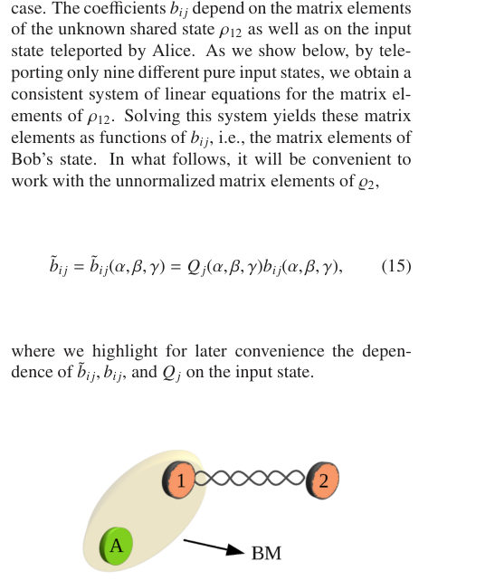
<figcaption class="paper-figure-caption"><b>Fig 1.</b> Figure 1: (color online) Schematic view of the teleportation-based QST protocol, whose goal is to fully reconstruct the two-qutrit state ρ12 (orange disks 1 and 2). One run of the protocol works as fol- lows. First, Alice prepares an input state ρA (green disk A), choosing among nine possible input states as explained in the main text. Sec- ond, she implements onto qutrits A and 1 a Bell measurement (BM), informing Bob of her measurement result and which qutrit A she tele- ported. After receiving these two pieces of information, Bob is sure that ̺2 [Eq. (14)] describes his qutrit. This procedure is repeated sev- eral times using the nine different input states that Alice should be able to...</figcaption>
</figure>
<figure class="paper-figure-card">
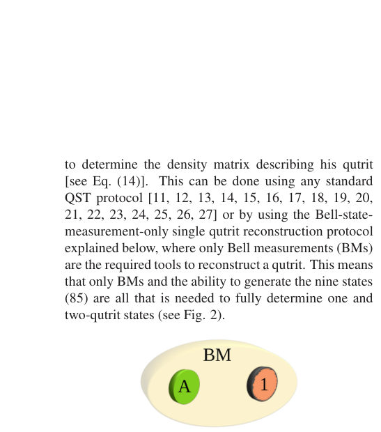
<figcaption class="paper-figure-caption"><b>Fig 2.</b> Figure 2: (color online) The one-qutrit Bell-state-measurement-only reconstruction protocol. The picture shows schematically the key in- gredient to its functioning: Bell measurements. By properly project- ing the unknown qutrit ̺1 (orange disk) and a set of known qutrits ρA (green disk) onto Bell states, we can express the matrix elements of ̺1 as a function of the probabilities to measure Bell states. See text for more details.</figcaption>
</figure>
<figure class="paper-figure-card">
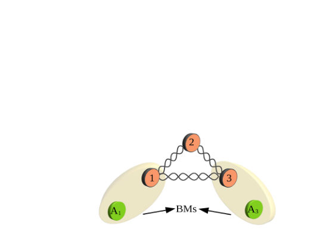
<figcaption class="paper-figure-caption"><b>Fig 3.</b> Figure 3: (color online) The three-qutrit teleportation-based QST pro- tocol. Two input states ρA1 and ρA3 (green disks) are prepared by Alice. Each input state, together with one qutrit of the state we want to determine (orange disks), are projected onto Bell states as shown in the figure. Bob then is informed by Alice of the results of those BMs and of the input states she prepared (qutrits A1 and A3). With these pieces of information Bob is sure that his qutrit is ̺2 [Eq. (102)], from which he can reconstruct ρ123, the unknown three-qutrit state (orange disks). See text for details.</figcaption>
</figure>
</div>

<p><strong>Summary.</strong> This paper extends the teleportation-based Quantum State Tomography protocol from qubits to qutrits (spin-1 systems). It demonstrates that by performing multiple quantum teleportation experiments using nine distinct input states, one can fully reconstruct the density matrix of a two-qutrit system. The method is shown to scale systematically to $n$-qutrits, providing a powerful theoretical tool for characterizing high-dimensional quantum states.</p>
<p><strong>Why it may be interesting.</strong> This work is highly relevant as it develops a concrete, scalable protocol for characterizing multi-partite quantum states in higher-dimensional systems (qutrits), which are crucial testbeds for understanding entanglement beyond simple qubit models.</p>
<details>
<summary>Detailed structure</summary>
<p><strong>Main problem.</strong> The primary goal is extending the quantum state tomography protocol, originally designed for qubits (spin-1/2), to reconstruct arbitrary states of qutrits (spin-1 systems). This extends to higher dimensions ($n$-qutrits) as well.</p>
<p><strong>Main result.</strong> The protocol successfully determines the density matrix $\rho_{12}$ (for two qutrits) by performing multiple quantum teleportation experiments using nine distinct known input states. The method scales to $n$-qutrits, requiring $9^{n-1}$ such experiments.</p>
<p><strong>Method.</strong> The reconstruction relies on measuring the resulting single-qutrit state ($
ho_2$) at Bob's end after Alice performs a Bell measurement on her two qubits (the unknown system and an auxiliary qubit). A consistent set of linear equations is solved using these measurements to determine the density matrix elements.</p>
<p><strong>Model / system.</strong> The physical system involves qutrits, which are spin-1 systems ($   ext{dim}=3$). The process models quantum state tomography on a two-qutrit system $\rho_{12}$ by leveraging the principles of quantum teleportation.</p>
<p><strong>Key observables.</strong> The matrix elements ($m_{ij}$) of the unknown density matrix $\rho_{12}$, and the probabilities ($Q_j$) associated with various Bell measurement outcomes.</p>
<p><strong>Important parameters / regimes.</strong> The number of required input states scales exponentially, $9^{n-1}$, for an $n$-qutrit system. The reconstruction requires at least nine distinct teleportation measurements for two qutrits.</p>
<p><strong>Assumptions / limitations.</strong> It is assumed that Bob can experimentally reconstruct his single-qutrit density matrix ($
ho_2$) using standard QST methods, and the protocol assumes specific measurement outcomes (e.g., measuring $|B_1\rangle$ initially).</p>
<p><strong>Figures summary.</strong> Figure 1 schematically illustrates the general teleportation-based QST protocol for two qutrits. Figure 3 extends this concept to three qutrits, showing Alice preparing and projecting pairs of states onto Bell bases.</p>
<p><strong>Paper structure.</strong> The paper first establishes the extension from qubits to qutrits, detailing the required measurements (nine input states). It then provides explicit formulas relating the unknown density matrix elements ($\rho_{12}$) to Bob's measured single-qutrit states. Finally, it discusses the general scaling of this method to $n$-qutrits.</p>
</details>
<details>
<summary>Abstract</summary>
<p>We show that the teleportation-based quantum state tomography (QST) protocol, originally built to reconstruct qubits (spin-1/2 systems), can be extended to deal with qutrits (spin-1 systems) as well. Similarly to the original proposal, only two resources are needed to implement the spin-1 teleportation-based QST protocol: (1) Alice should be able to implement the analog of Bell measurements for spin-1 systems; and (2) she should be able to prepare a few different single qutrit states that will be teleported to Bob.</p>
</details>
<p><sub><a href="#top">↑ back to top</a></sub></p>

<p><a id="paper-2607.05940"></a></p>
<h3 id="high-precision-method-for-characterizing-degree-of-collimation-and-beam-quality-for-application-in-cold-atom-gravimeter-system"><a href="http://arxiv.org/abs/2607.05940v1">High-Precision Method for Characterizing Degree of Collimation and Beam Quality for Application in Cold Atom Gravimeter System</a></h3>
<p><strong>Authors:</strong> Nawaz Sarif Mallick, Anju, Aishik Acharya<br>
<strong>Type:</strong> experiment · <strong>Category:</strong> other · <strong>PDF:</strong> <a href="https://arxiv.org/pdf/2607.05940v1">https://arxiv.org/pdf/2607.05940v1</a><br>
<strong>Analysis basis:</strong> full PDF text, analyzed in chunks
<strong>Topic relevance:</strong> <code>interference shaping light</code> <strong>3/5</strong> · <code>quantum measurements</code> <strong>1/5</strong> · <code>quantum optics experiment</code> <strong>1/5</strong></p>
<div class="figure-strip-hint">↔ Scroll figures horizontally</div>
<div class="paper-figures-scroll">
<figure class="paper-figure-card">
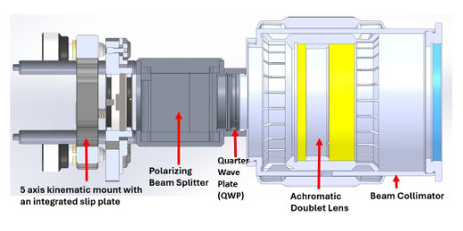
<figcaption class="paper-figure-caption"><b>Fig 1.</b> FIG. 2. Three-dimensional mechanical model of the complete beam collimator. The overall length of the beam collimator is 250 mm.</figcaption>
</figure>
<figure class="paper-figure-card">
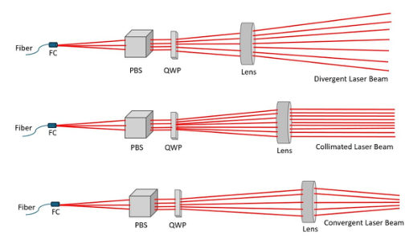
<figcaption class="paper-figure-caption"><b>Fig 2.</b> FIG. 1. Schematic representation of collimated and uncollimated laser beams. FC: Fiber Coupler, PBS: Polarizing Beam Splitter, QWP: Quarter Wave Plate.</figcaption>
</figure>
<figure class="paper-figure-card">
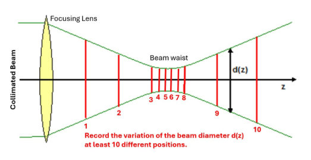
<figcaption class="paper-figure-caption"><b>Fig 3.</b> FIG. 4. Schematic diagram of the experimental setup used to mea- sure the beam waist, divergence angle, Rayleigh length, and the beam quality factor M2. Collimated laser beam passes through a focusing lens of focal length, f = 250 mm and beam diameter decreases as it approaches the len’s focal point.</figcaption>
</figure>
<figure class="paper-figure-card">
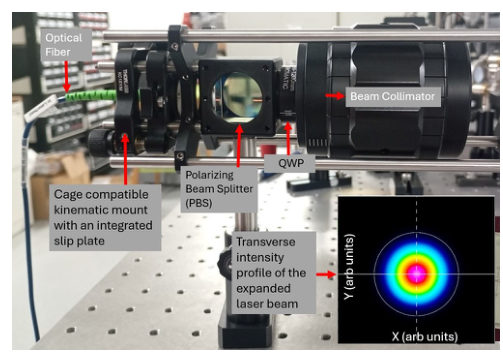
<figcaption class="paper-figure-caption"><b>Fig 4.</b> FIG. 3. (a) Optical design of the experimental beam expander setup. (b) Transverse intensity profile of the expanded laser beam. (c) Nor- malised intensity profile of the laser beam.</figcaption>
</figure>
<figure class="paper-figure-card">
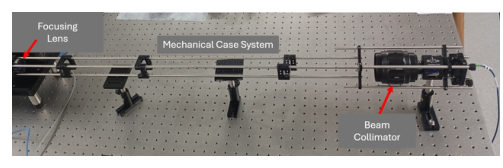
<figcaption class="paper-figure-caption"><b>Fig 5.</b> FIG. 5. A tabletop experimental setup is used to achieve high preci- sion beam alignment. A high precision opto-mechanical caging and alignment platform system with a length of 1050 mm is integrated with the beam collimator unit.</figcaption>
</figure>
</div>

<p><strong>Summary.</strong> This paper details the design and rigorous characterization of a high-precision laser beam collimator specifically for use in cold-atom Gravimeter systems. By employing ISO 11146 compliant measurements, the authors demonstrated achieving microradian level collimation accuracy. This robust methodology provides a crucial tool for minimizing systematic errors in long-baseline quantum sensing experiments.</p>
<p><strong>Why it may be interesting.</strong> This work is highly relevant as it addresses the critical experimental bottleneck—laser beam stability and characterization—for advanced quantum sensing platforms like atom interferometers, which are central to modern AMO physics research.</p>
<details>
<summary>Detailed structure</summary>
<p><strong>Main problem.</strong> The core challenge is maintaining highly collimated laser beams with excellent spatial quality, as residual beam divergence introduces systematic errors that degrade the precision of quantum sensing experiments like cold-atom gravimeters.</p>
<p><strong>Main result.</strong> The developed high-precision collimator successfully achieved microradian level collimation accuracy, demonstrating stable and well-controlled beam propagation essential for advanced atom interferometry.</p>
<p><strong>Method.</strong> Characterization involved ISO 11146 compliant beam propagation measurements combined with Gaussian beam analysis to determine key parameters like divergence angle and the beam quality factor ($M^2$).</p>
<p><strong>Model / system.</strong> The physical system is a custom, high-precision laser beam collimator designed for cold-atom Gravimeter systems. It incorporates a five-degree-of-freedom adjustment mechanism and utilizes optical components to control beam divergence over long distances.</p>
<p><strong>Key observables.</strong> Measured divergence angles ($0.006^\circ$ x, $0.007^\circ$ y), Beam Waist Asymmetry (BWA = 1.33), and the beam quality factor ($M^2$).</p>
<p><strong>Important parameters / regimes.</strong> Target output diameter of 16 mm; microradian level collimation accuracy; $\lambda = 780.241 	ext{ nm}$.</p>
<p><strong>Assumptions / limitations.</strong> The analysis relies on Gaussian beam theory and the ISO 11146 standard for beam propagation measurement.</p>
<p><strong>Figures summary.</strong> Figures illustrate the schematic of the collimator, its mechanical model, intensity profiles (transverse and normalized), and detailed setups for both coarse and fine alignment procedures.</p>
<p><strong>Paper structure.</strong> The paper details the necessity of high-quality beams, presents the design of the 5-DOF collimator, outlines the ISO 11146 measurement methodology using beam profilers, reports quantitative measurements of divergence and $M^2$, and concludes by validating its use in a cold-atom Gravimeter setup.</p>
</details>
<details>
<summary>Abstract</summary>
<p>Highly collimated laser beam with excellent spatial quality is essential for quantum sensing experiments, where even small residual beam divergence can accumulate over distance and introduce significant systematic errors. In this article, we present the design and detailed characterization of a high precision laser beam collimator developed for a cold-atom Gravimeter system, capable of producing an expanded laser beam with a diameter of 16 mm while achieving microradian level collimation accuracy through a five-degree-of-freedom (5-DOF) adjustment mechanism. The beam quality is evaluated using an ISO11146 compliant beam propagation measurement combined with Gaussian beam analysis to extract key parameters, including the beam waist, divergence angle, Rayleigh length, and beam quality factor $M^{2}$. The measured divergence angles of 0.006° (105 micro-radian) along the $x$ axis and 0.007° (122 micro-radian) along the $y$ axis confirm stable and well controlled collimation over long propagation distances. The demonstrated collimation architecture and characterization methodology provide a robust and scalable solution for cold-atom Gravimetry and other precision optical applications that require stable, high quality laser beams maintained over extended distances.</p>
</details>
<p><sub><a href="#top">↑ back to top</a></sub></p>

<p><a id="paper-2607.05949"></a></p>
<h3 id="ce-antiferromagnetic-electronic-structure-in-lasrmath544mathmnmath545mathomath546math-revealed-by-micro-focused-angle-resolved-photoemission-spectroscopy-and-tight-binding-models"><a href="http://arxiv.org/abs/2607.05949v1">CE-antiferromagnetic electronic structure in LaSr$_2$Mn$_2$O$_7$ revealed by micro-focused angle-resolved photoemission spectroscopy and tight-binding models</a></h3>
<p><strong>Authors:</strong> Yasutaka Sawata, Yudai Hirai, Rintaro Miyabayashi, Goro Shibata, Hideki Kuwahara, Miho Kitamura, Koji Horiba, Kenichi Ozawa, Noriaki Hamada, Tomohiko Saitoh<br>
<strong>Type:</strong> both · <strong>Category:</strong> strongly correlated electrons · <strong>PDF:</strong> <a href="https://arxiv.org/pdf/2607.05949v1">https://arxiv.org/pdf/2607.05949v1</a><br>
<strong>Analysis basis:</strong> full PDF text, analyzed in chunks
<strong>Topic relevance:</strong> <code>spintronics-quantum-optics interface</code> <strong>3/5</strong> · <code>exotic spin models in light-matter</code> <strong>1/5</strong></p>
<div class="figure-strip-hint">↔ Scroll figures horizontally</div>
<div class="paper-figures-scroll">
<figure class="paper-figure-card">
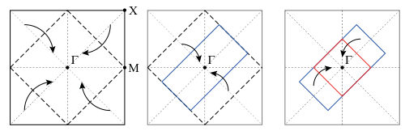
<figcaption class="paper-figure-caption"><b>Fig 1.</b> FIG. 2. Comparisons of various BZs. Arrows show BZ-folding processes (a) The CO BZ (dashed square) compared with the A-AFM BZ (black square). (b) The COO BZ (blue rectangle) compared with the CO BZ. (c) The CE-AFM BZ (red square) compared with the COO BZ.</figcaption>
</figure>
<figure class="paper-figure-card">
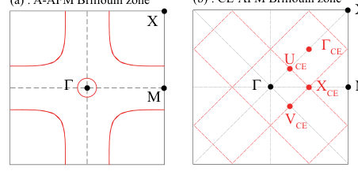
<figcaption class="paper-figure-caption"><b>Fig 2.</b> FIG. 3. (a) Brillouin zone of the A-AFM state with the cal- culated Fermi surface of the A-AFM state at x = 0.5. (b) Brillouin zones of the CE-AFM state (red) shown in Fig. 1(a) compared to that of A-AFM (black). For more details, see text.</figcaption>
</figure>
<figure class="paper-figure-card">
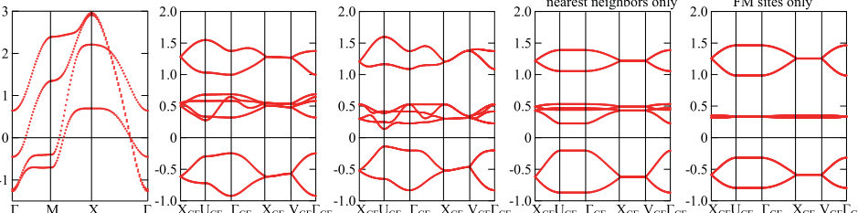
<figcaption class="paper-figure-caption"><b>Fig 3.</b> FIG. 4. (a) Tight-binding majority-spin band structure of the bilayer FM state in Model 1 that reproduces the calculations in Ref. 43. (b) and (c) Tight-binding band structure of the CE-AFM state in Model 1 [(b)] and Model 2 [(c)]. (d) The same calculation as (b) including the nearest-neighbor hoppings only. (e) The same calculation as (c) considering the FM sites only.</figcaption>
</figure>
<figure class="paper-figure-card">
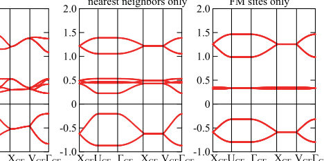
<figcaption class="paper-figure-caption"><b>Fig 4.</b> Figure 5 shows the result of our µ-ARPES measure- ments of the x = 0.5 sample along the two symmetry lines together with the result of the x=0.4 sample along the Γ−X line. Again, please note that the Γ−M and the Γ−X lines in the A-AFM Brillouin zone correspond to the Γ(ΓCE)−XCE−ΓCE and Γ(ΓCE)−UCE−ΓCE−UCE−ΓCE lines in the CE-AFM Brillouin zone, respectively (see also Fig. 3). Figure 5(a) shows the µ-ARPES intensity plot along the Γ−XCE−ΓCE (Γ−M) direction. A shallow parabolic- like band with the vertex at ∼1.5 eV at the Γ point can be observed. In addition, one can observe significant spectral intensity around the two ΓCE(M) points on the both sides of Γ (highlighted by white dashed circles)....</figcaption>
</figure>
<figure class="paper-figure-card">
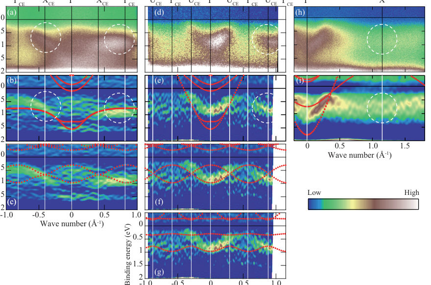
<figcaption class="paper-figure-caption"><b>Fig 5.</b> FIG. 5. (a) The µ-ARPES intensity plot of the x=0.50 sample along the Γ−XCE−ΓCE (Γ−M) direction. White dashed circles show significant intensity around the right ΓCE (M) and the left XCE points. (b) A second-derivative plot of Panel (a) compared with the band-structure calculation of the A-AFM state at x=0.50 (red dotted lines). (c) The second-derivative plot compared with the tight-binding calculation in Model 1 (red dotted lines). (d) The µ-ARPES intensity plot of the x=0.50 sample along the Γ−V/UCE−ΓCE (Γ−X) direction. A white dashed circle shows a hot spot around the ΓCE(X) point. (e) A second-derivative plot of Panel (d) compared with the band-structure calculation of the A-AFM state at...</figcaption>
</figure>
</div>

<p><strong>Summary.</strong> This work investigates the electronic structure of LaSr2Mn2O7 in its CE-antiferromagnetic state by combining $\mu$-ARPES experiments with tight-binding theory. The authors successfully demonstrate that the observed band dispersions are best explained by a model incorporating the CE-AFM magnetic ordering, distinguishing it from simpler A-AFM structures. This provides crucial experimental evidence for understanding charge and orbital ordering in these complex manganites.</p>
<p><strong>Why it may be interesting.</strong> The detailed comparison between different magnetic ordering states (CE-AFM vs. A-AFM) using spectroscopic techniques provides deep insight into how electronic structure is intrinsically linked to complex magnetic ground states in strongly correlated oxides.</p>
<details>
<summary>Detailed structure</summary>
<p><strong>Main problem.</strong> The study aims to experimentally and theoretically reveal the electronic structure of LaSr2Mn2O7 when it is in its CE-type antiferromagnetic (CE-AFM) state.</p>
<p><strong>Main result.</strong> The $\mu$-ARPES measurements revealed a dispersive intensity around the X point, which was successfully explained by the CE-AFM tight-binding model for the first time. This confirms the electronic signature of the CE-AFM phase in this material.</p>
<p><strong>Method.</strong> The research combines experimental micro-focused angle-resolved photoemission spectroscopy ($\mu$-ARPES) with theoretical analysis using detailed tight-binding models derived from LDA+U calculations.</p>
<p><strong>Model / system.</strong> The physical system is LaSr2Mn2O7, focusing on the CE-AFM state characterized by charge and orbital ordering. Theoretical modeling involves single-layered (2D) tight-binding Hamiltonians incorporating both FM and AF hopping integrals to capture the complex magnetic structure.</p>
<p><strong>Key observables.</strong> Electronic band dispersion relations measured via $\mu$-ARPES intensity plots, particularly at high-symmetry points like X and M in the folded Brillouin Zone ($\Gamma_{	ext{CE}}$).</p>
<p><strong>Important parameters / regimes.</strong> The analysis compares CE-AFM vs. A-AFM states; key energy scales include hopping integrals (e.g., $ ilde{t}_{dd\sigma} = -0.652     ext{ eV}$) and the magnetic ordering type.</p>
<p><strong>Assumptions / limitations.</strong> It is assumed that the observed features are governed by the CE-AFM band structure, although some near-Fermi level intensity mapping might suggest A-AFM contributions; the domain size is estimated to be $\lesssim 20 \mu	ext{m}$.</p>
<p><strong>Figures summary.</strong> Figures compare ARPES data (intensity and second derivative) along specific high-symmetry directions ($\Gamma-	ext{V}/	ext{UCE}-\Gamma	ext{CE}$), showing that the CE-AFM model successfully reproduces band features at both $\Gamma_{	ext{CE}}$ points, unlike the A-AFM structure.</p>
<p><strong>Paper structure.</strong> The paper establishes the scientific problem by comparing different magnetic states (CE-AFM vs. A-AFM). It details the theoretical framework using tight-binding models and presents experimental $\mu$-ARPES results that are then used to validate the CE-AFM model over the A-AFM model, concluding with a discussion of domain size.</p>
</details>
<details>
<summary>Abstract</summary>
<p>We have investigated the electronic structure of LaSr$_2$Mn$_2$O$_7$ in the CE-type antiferromagnetic (CE-AFM) state below the Néel temperature using micro-focused angle-resolved photoemission spectroscopy ($μ$-ARPES) and tight-binding models. In agreement with the tight-binding calculations, we found a dispersive intensity around the X point in the $μ$-ARPES spectra, where the A-type antiferromagnetic (A-AFM) phase has no bands experimentally and theoretically, demonstrating that we have successfully captured the signatures of the CE-AFM band structure for the first time. Many observed features can be explained by the CE-AFM tight-binding bands, although some of them and the overall near-Fermi level intensity mapping can be explained by the A-AFM band structure. This indicates that the CE-AFM domain size would be no larger than the beam footprint size of a $\sim\!20$~{\textmu}m scale.</p>
</details>
<p><sub><a href="#top">↑ back to top</a></sub></p>

<p><a id="paper-2607.06230"></a></p>
<h3 id="entanglement-as-a-structural-complexity-axis-a-pac-bayesian-view-of-generalization-in-quantum-policies-and-value-functions"><a href="http://arxiv.org/abs/2607.06230v1">Entanglement as a Structural Complexity Axis: A PAC-Bayesian View of Generalization in Quantum Policies and Value Functions</a></h3>
<p><strong>Authors:</strong> Jian Xu, Delu Zeng, John Paisley, Qibin Zhao<br>
<strong>Type:</strong> both · <strong>Category:</strong> quantum information and computing · <strong>PDF:</strong> <a href="https://arxiv.org/pdf/2607.06230v1">https://arxiv.org/pdf/2607.06230v1</a><br>
<strong>Analysis basis:</strong> full PDF text, analyzed in chunks
<strong>Topic relevance:</strong> <code>entanglement &amp; information structure</code> <strong>3/5</strong></p>
<div class="figure-strip-hint">↔ Scroll figures horizontally</div>
<div class="paper-figures-scroll">
<figure class="paper-figure-card">
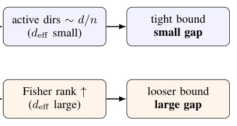
<figcaption class="paper-figure-caption"><b>Fig 1.</b> Figure 1: The mechanism. At a fixed parameter count, entangling gates enlarge the backward light- cone of the readout observable (Lemma 2), which raises the rank and hence the effective dimension deff = log det(I +γ ˆF) of the Fisher geometry (Proposition 1). A larger deff enlarges the complexity term of the PAC-Bayes bound equation 3 and thus the generalization gap—an effect invisible to a parameter-counting analysis, since d is unchanged.</figcaption>
</figure>
<figure class="paper-figure-card">
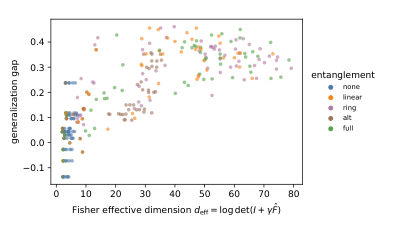
<figcaption class="paper-figure-caption"><b>Fig 2.</b> Figure 2: Left: the empirical gap (solid) and the certified PAC-Bayes bound of Eq. equation 3 (dashed) versus training-set size N, per circuit. The bound upper-bounds the gap, decays with N at the same rate, and—driven by deff—orders the circuits none &lt; linear &lt; full at every N, all at identical parameter count: the figure shows the bound acting as a ranking certificate, which no table entry conveys. Right: across all circuits the gap increases with the Fisher effective dimension deff = log det(I +γ ˆF) (Spearman ρ = 0.82); colour encodes entangling connectivity, which drives deff up at fixed parameter count.</figcaption>
</figure>
<figure class="paper-figure-card">
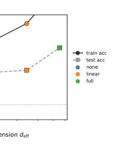
<figcaption class="paper-figure-caption"><b>Fig 3.</b> Figure 3: The accuracy–complexity trade-off (N=64, single-observable readout). As the Fisher effective dimension deff grows with entanglement (colour), train accuracy rises but test accuracy does not, so the gap—the vertical distance between the curves—widens. Entanglement buys training fit that the test distribution does not reward.</figcaption>
</figure>
<figure class="paper-figure-card">
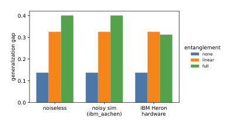
<figcaption class="paper-figure-caption"><b>Fig 4.</b> Figure 6: Left: the entangled-&gt;-none gap ordering survives three controls at N=64—matched training accuracy, a different readout observable, and a different optimizer—so the gap is not a mere optimization or trainability artifact. Right: the ordering is reproduced by a noise-model simulator of ibm aachen and by execution on the ibm aachen Heron processor itself under real noise; calibration and shot-noise details are in Appendix B.</figcaption>
</figure>
<figure class="paper-figure-card">
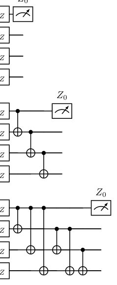
<figcaption class="paper-figure-caption"><b>Fig 5.</b> Figure 7: The three ans¨atze at n=4 (one layer of the repeated block shown; the block repeats L times, here between the encoding RY (xi) and the ⟨Z0⟩readout). All three use the same RY , RZ rotations—hence the same parameter count d=2nL—and differ only in the entangling block: none (no CNOTs), a linear CNOT chain, or all-to-all CNOTs. This is the “fixed parameter count, vary only entanglement” comparison.</figcaption>
</figure>
</div>

<p><strong>Summary.</strong> The paper introduces the Fisher effective dimension as the true measure of complexity governing generalization in quantum circuits used for machine learning tasks. By showing that entanglement inflates this dimension independently of parameter count, it establishes a clear entanglement-generalization trade-off. This reframes quantum policy design away from mere expressivity towards structural complexity control.</p>
<p><strong>Why it may be interesting.</strong> This work provides a theoretical framework connecting geometric properties (Fisher information/entanglement) directly to generalization bounds in quantum machine learning models. This is crucial for designing efficient and provably generalizable quantum algorithms.</p>
<details>
<summary>Detailed structure</summary>
<p><strong>Main problem.</strong> The core problem is determining a rigorous measure of generalization complexity for quantum policies ($\pi_	heta$) and value functions used in Quantum Reinforcement Learning (QRL). The authors aim to move beyond simple parameter counting to understand the role of entanglement.</p>
<p><strong>Main result.</strong> Generalization capability is governed by the effective dimension of the Fisher geometry, which quantifies structural complexity. Entanglement acts as an independent axis of complexity, causing circuits with high entanglement but fixed parameters to generalize worse than non-entangled counterparts.</p>
<p><strong>Method.</strong> The authors derive and apply a PAC-Bayesian generalization bound based on the Fisher Information Matrix ($\hat{F}$). They analyze how varying entanglement connectivity inflates the effective dimension ($   ext{deff} = \log \det(I + \gamma \hat{F})$) while keeping parameter count constant.</p>
<p><strong>Model / system.</strong> The model utilizes Parameterized Quantum Circuits (PQCs) trained for tasks like supervised classification and value estimation. The circuits are systematically varied by controlling the entangling connectivity pattern (e.g., none, linear chain, full coupling) across a fixed number of qubits and parameters.</p>
<p><strong>Key observables.</strong> Generalization gap (test vs. train performance), Fisher effective dimension ($ ext{deff}$), entanglement connectivity, and correlation coefficients ($
ho$) between $  ext{deff}$ and the gap.</p>
<p><strong>Important parameters / regimes.</strong> The generalization constant $\gamma$ used in the bound; fixed number of trainable rotations/parameters ($d$); sample size ($N$).</p>
<p><strong>Assumptions / limitations.</strong> The analysis is primarily focused on controlled decision models (single-observable readout) to isolate the entanglement effect. The results are claimed to be a 'ranking certificate' rather than a numerically tight bound.</p>
<p><strong>Figures summary.</strong> Figures illustrate that increasing entangling connectivity monotonically increases the rank of the Fisher matrix and thus $    ext{deff}$, which correlates strongly with an increased generalization gap, even when parameter count is held fixed.</p>
<p><strong>Paper structure.</strong> The paper establishes the need for a better complexity measure than raw parameters. It derives the PAC-Bayesian bound using the Fisher geometry, proves that entanglement inflates this effective dimension by enlarging the light-cone of the readout observable, and validates this mechanism across multiple quantum learning tasks.</p>
</details>
<details>
<summary>Abstract</summary>
<p>Parameterized quantum circuits (PQCs) are increasingly used as policies and value functions in quantum reinforcement learning, yet it remains unclear when and why quantum policies generalize. We give a PAC-Bayesian account in which generalization is governed not by the raw number of circuit parameters, but by the effective dimension of the Fisher geometry induced by the circuit. This quantity is inflated by entanglement, making entangling connectivity an independent axis of complexity.In controlled experiments that fix the number of trainable rotations and vary only entanglement, we find that circuits with larger Fisher effective dimension exhibit larger train-test gaps, while parameter count is a weak predictor. The resulting bound acts primarily as a ranking certificate: it correctly orders circuits with identical parameter count, which parameter-counting bounds cannot do. We validate this mechanism across supervised classification, quantum contextual bandits, and value-function generalization, where entangled circuits consistently generalize worse than non-entangled circuits of equal parameter count, with gaps shrinking as sample size increases.Our strongest evidence comes from low-variance decision models, including single-observable classifiers, value heads, and one-step policies. In end-to-end multi-step policy learning, entanglement effects remain statistically significant but high return variance leaves the full ordering only partially resolved. Partial-correlation analysis shows that Fisher effective dimension screens off entangling pattern, and controls for training accuracy, readout, and optimizer rule out major optimization confounders. The effect also persists on an IBM Heron quantum processor under real noise. Overall, our results reframe quantum policy design around an entanglement--generalization trade-off rather than expressivity alone.</p>
</details>
<p><sub><a href="#top">↑ back to top</a></sub></p>

<p><a id="paper-2607.06511"></a></p>
<h3 id="static-vacancies-as-parametrized-conformal-defects-in-the-critical-math568math-math569math-transverse-field-ising-chain"><a href="http://arxiv.org/abs/2607.06511v1">Static vacancies as parametrized conformal defects in the critical $J_1$--$J_2$ transverse-field Ising chain</a></h3>
<p><strong>Authors:</strong> R. L. Silva, R. C. Silva, R. J. C. Lopes, A. R. Pereira<br>
<strong>Type:</strong> theory · <strong>Category:</strong> statistical mechanics · <strong>PDF:</strong> <a href="https://arxiv.org/pdf/2607.06511v1">https://arxiv.org/pdf/2607.06511v1</a><br>
<strong>Analysis basis:</strong> full PDF text, analyzed in chunks
<strong>Topic relevance:</strong> <code>analog quantum simulation</code> <strong>2/5</strong> · <code>driven-dissipative phase transition</code> <strong>2/5</strong> · <code>methods for driven-dissipative</code> <strong>2/5</strong> · <code>non-equilibrium universality</code> <strong>2/5</strong> · <code>Frenkel-Kontorova</code> <strong>1/5</strong> · <code>correlated / nonlocal dissipation</code> <strong>1/5</strong> · <code>entanglement &amp; information structure</code> <strong>1/5</strong> · <code>exotic spin models in light-matter</code> <strong>1/5</strong> · <code>non-equilibrium dynamics</code> <strong>1/5</strong></p>
<div class="figure-strip-hint">↔ Scroll figures horizontally</div>
<div class="paper-figures-scroll">
<figure class="paper-figure-card">
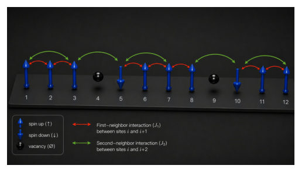
<figcaption class="paper-figure-caption"><b>Fig 1.</b> FIG. 1. The J1–J2 transverse-field Ising chain of Eq. (1) with two static nonmagnetic vacancies a distance r apart. Black spheres are vacant sites; the remaining spins interact via J1 (red) and J2 (green). The J2 bond bridging across each va- cancy (orange) keeps the chain connected and is the channel that gives the defect its J2-dependent transmission.</figcaption>
</figure>
<figure class="paper-figure-card">
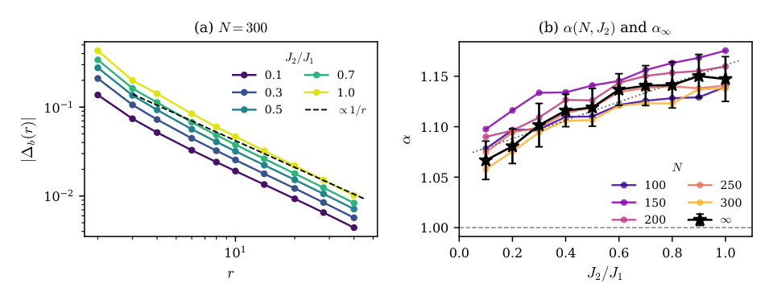
<figcaption class="paper-figure-caption"><b>Fig 2.</b> FIG. 2. (a) The vacancy-vacancy binding energy |∆b(r)| on the critical line, N = 300, for representative J2/J1 values. The behavior is power-law to high precision (linear in log-log over more than a decade in r); 1/r is shown for reference. The fits in the window r ∈[4, 32] all have R2 ≥0.996. (b) The fitted exponent α(N, J2) for the five sizes (colored symbols) and the 1/N-extrapolated α∞(J2) (black stars, error bars from the standard error of the linear extrapolation). The dotted line is the linear fit of Eq. (4); the dashed line marks α = 1.</figcaption>
</figure>
<figure class="paper-figure-card">
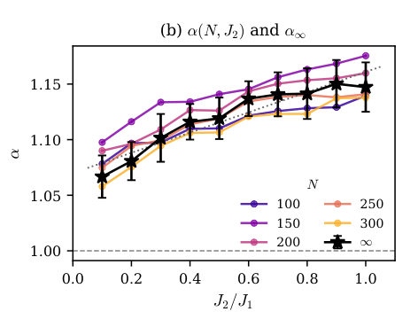
<figcaption class="paper-figure-caption"><b>Fig 3.</b> Figure 2(a) shows |∆b(r)| for N = 300 at five represen- tative values of J2/J1. The data exhibits a clear linear behaviour in log-log over more than a decade in r, demon- strating that the vacancy-vacancy interaction along the critical line is genuinely algebraic, in sharp contrast to the exponential decay found in the gapped regime in Ref. [1]. This is the qualitative change in the vacancy physics in- duced by quantum criticality. A power-law fit in the window r ∈[4, 32] gives, for each (N, J2), an effective exponent α(N, J2) with R2 ranging from 0.996 to 1.000. The values are shown in Fig. 2(b). At fixed J2, α varies by at most ≈0.04 between N = 100 and N = 300; the dependence on 1/N is...</figcaption>
</figure>
<figure class="paper-figure-card">
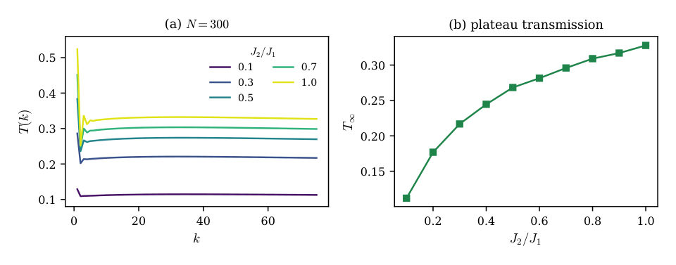
<figcaption class="paper-figure-caption"><b>Fig 4.</b> FIG. 3. (a) Transmission ratio T(k) across a single central vacancy for N = 300 in some representative J2/J1 values. After a short transient at small k, T(k) saturates to a J2-dependent plateau. (b) The 1/N-extrapolated plateau value T∞(J2) (error bars from the extrapolation are smaller than the symbols). The defect is strongly reflective at small J2 (T∞≃0.11) and becomes substantially more transmissive at J2/J1 = 1.0 (T∞≃0.33).</figcaption>
</figure>
<figure class="paper-figure-card">
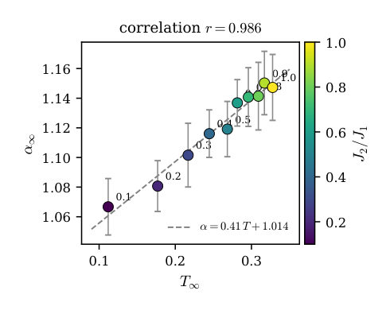
<figcaption class="paper-figure-caption"><b>Fig 5.</b> FIG. 5. The Casimir exponent α∞versus the transmission plateau T∞, with point color encoding J2/J1 and error bars showing the α∞extrapolation uncertainty. The two quanti- ties trace a smooth, nearly linear curve, α∞≃0.41 T∞+1.014. Because both are monotonic functions of the single tuning parameter J2, they move together coherently as J2 is varied, with no abrupt features.</figcaption>
</figure>
</div>

<p><strong>Summary.</strong> This paper uses DMRG simulations on the critical $J_1$-$J_2$ Ising chain to characterize static vacancies as tunable conformal defects. By analyzing the algebraic decay of vacancy interactions, the transmission ratio, and boundary entropy, the authors demonstrate that these three observables vary smoothly with the coupling ratio $J_2/J_1$. This establishes a quantitative link between microscopic parameters and universal defect properties in quantum critical systems.</p>
<p><strong>Why it may be interesting.</strong> The work connects concepts from quantum criticality (Ising universality class) to boundary physics via conformal field theory (CFT), providing quantitative evidence for how defect parameters can be continuously tuned by microscopic couplings ($J_2/J_1$).</p>
<details>
<summary>Detailed structure</summary>
<p><strong>Main problem.</strong> The study investigates how static nonmagnetic vacancies act as parametrized conformal defects within the critical $J_1$-$J_2$ transverse-field Ising chain.</p>
<p><strong>Main result.</strong> The vacancy defect forms a continuous, one-parameter family of partially transmissive conformal defects controlled by the ratio $J_2/J_1$, evidenced by the smooth variation of three key observables ($\alpha_\infty$, $T_\infty$, $\log g_\infty$).</p>
<p><strong>Method.</strong> Density-Matrix Renormalization Group (DMRG) calculations were performed on open chains, analyzing power-law decay exponents and boundary entropy.</p>
<p><strong>Model / system.</strong> The system is the transverse-field Ising chain with first ($J_1$) and second ($J_2$) neighbor couplings, $H = -\sum_{i} J_1 \sigma^x_i \sigma^x_{i+1} - \sum_{i} J_2 \sigma^x_i \sigma^x_{i+2} - \sum_{i} b \sigma^z_i$, with vacancies acting as defects.</p>
<p><strong>Key observables.</strong> Vacancy-vacancy binding energy decay exponent ($\alpha$), spin correlator transmission ratio ($T_\infty$), and Affleck-Ludwig boundary entropy ($\log g_\infty$).</p>
<p><strong>Important parameters / regimes.</strong> The tuning parameter is the ratio $J_2/J_1$, which controls the defect's properties across the quantum critical line.</p>
<p><strong>Assumptions / limitations.</strong> The vacancy is treated as a bulk defect preserving connectivity, and the critical line location is robustly fixed by matching the bulk spin-correlator exponent $\eta=1/4$.</p>
<p><strong>Figures summary.</strong> Figures illustrate the power-law decay of binding energy $|\Delta b(r)| \sim r^{-\alpha}$ (Fig. 2a), plot the dependence of the fitted exponent $\alpha_\infty$ and transmission $T_\infty$ on $J_2/J_1$, and show the extraction method for boundary entropy ($\log g$) (Fig. 6).</p>
<p><strong>Paper structure.</strong> The paper establishes the physical model, applies DMRG to calculate three key observables ($\Delta b(r)$, $T(k)$, $\log g$), analyzes how these observables vary with $J_2/J_1$ along the critical line, and concludes that this variation confirms a continuous family of conformal defects.</p>
</details>
<details>
<summary>Abstract</summary>
<p>We revisit the problem of two static nonmagnetic vacancies in the transverse-field Ising chain with first- and second-neighbor couplings $J_1$ and $J_2$, now on the critical line, using density-matrix renormalization-group (DMRG) calculations in open chains of up to $N=300$ sites. In contrast to the gapped regime studied previously, where the vacancy-vacancy interaction decays exponentially, along the entire quantum critical line the interaction becomes algebraic, $|Δ_b(r)|\sim r^{-α}$, with $α$ close to the universal Casimir value of unity and a weak but systematic dependence on the second-neighbor coupling, $α_\infty \simeq 1.070 + 0.091\, J_2/J_1)$ across $J_2/J_1\in[0.1,1.0]$. The transmission ratio of the spin correlator across a vacancy approaches a $J_2$-dependent plateau $T_\infty(J_2)$ that grows from $0.11$ to $0.33$ over the same range, and the Affleck-Ludwig boundary entropy is small and approximately constant, $\log g_\infty \approx -0.073$, well above the Ising fixed-BC value $-\ln\sqrt{2}$ and close to the free-boundary value. The three observables vary smoothly and monotonically with $J_2$, consistent with a one-parameter family of partially transmissive conformal defects controlled by $J_2$. Throughout, the critical line is located using the bulk spin-correlator exponent $η=1/4$, the order-parameter exponent of the Ising universality class, which provides a robust criterion in this open geometry.</p>
</details>
<p><sub><a href="#top">↑ back to top</a></sub></p>

<p><a id="paper-2607.05954"></a></p>
<h3 id="the-ramsey-community-number-as-a-renormalization-group-crossing"><a href="http://arxiv.org/abs/2607.05954v1">The Ramsey community number as a renormalization-group crossing</a></h3>
<p><strong>Authors:</strong> Alexei Vazquez<br>
<strong>Type:</strong> theory · <strong>Category:</strong> statistical mechanics · <strong>PDF:</strong> <a href="https://arxiv.org/pdf/2607.05954v1">https://arxiv.org/pdf/2607.05954v1</a><br>
<strong>Analysis basis:</strong> full PDF text, analyzed in chunks
<strong>Topic relevance:</strong> <code>Keldysh / 2PI / non-Gaussian methods</code> <strong>2/5</strong> · <code>analog quantum simulation</code> <strong>2/5</strong> · <code>driven-dissipative phase transition</code> <strong>2/5</strong> · <code>methods for driven-dissipative</code> <strong>2/5</strong> · <code>correlated / nonlocal dissipation</code> <strong>1/5</strong> · <code>correlated cavity matter</code> <strong>1/5</strong> · <code>entanglement &amp; information structure</code> <strong>1/5</strong> · <code>non-equilibrium dynamics</code> <strong>1/5</strong> · <code>non-equilibrium universality</code> <strong>1/5</strong></p>
<div class="figure-strip-hint">↔ Scroll figures horizontally</div>
<div class="paper-figures-scroll">
<figure class="paper-figure-card">
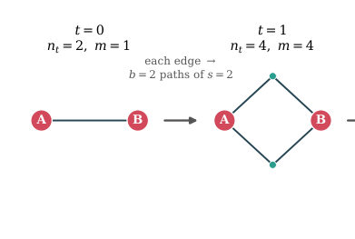
<figcaption class="paper-figure-caption"><b>Fig 1.</b> Figure 1: Construction of the diamond hierarchical lattice for b = s = 2 by edge replace- ment. Starting from a single bond between the poles A, B (t = 0), each generation replaces every edge by b = 2 parallel paths of s = 2 edges, adding one interior vertex per path; iterating gives m = 4t edges and nt = (2 · 4t + 4)/3 nodes [Eq. (3)]. Node area ∝degree, so the two poles emerge as the permanent degree-2t hubs.</figcaption>
</figure>
<figure class="paper-figure-card">
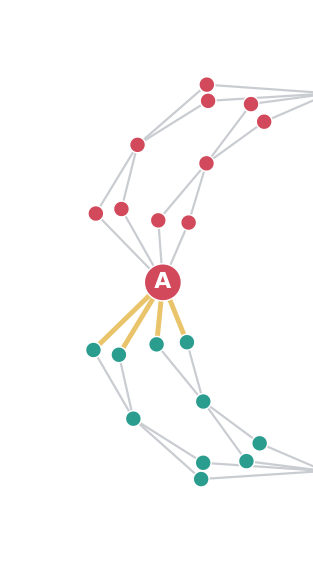
<figcaption class="paper-figure-caption"><b>Fig 2.</b> Figure 2: Diamond lattice G3 (nt = 44) with the self-similar bundle cut. Red: bundle 0 together with the poles A, B; teal: bundle 1; gold: the e12 = 2t = 8 seam edges, every one incident on a pole. Node area ∝degree, exposing the two degree-2t hubs.</figcaption>
</figure>
<figure class="paper-figure-card">
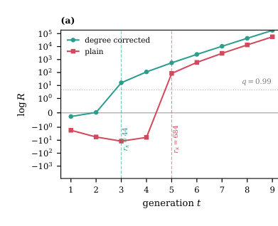
<figcaption class="paper-figure-caption"><b>Fig 3.</b> Figure 3: (a) Log evidence of the bundle split versus generation (symlog scale). The degree-corrected model clears the detection threshold ln[q/(1−q)] (dotted, q = 0.99) at t = 3, giving rκ = n3 = 44; the plain model only at t = 5, rκ = n5 = 684. The lattice exists only at the discrete sizes nt, so the crossing—and hence rκ—is a generation index. (b) Renormalization-group flow of the block densities Eq. (9) to the community fixed point (uin, u×) = (K, 0) = (2, 0); the seam density decays geometrically as (λseam/λvol)t = (1/s)t</figcaption>
</figure>
<figure class="paper-figure-card">
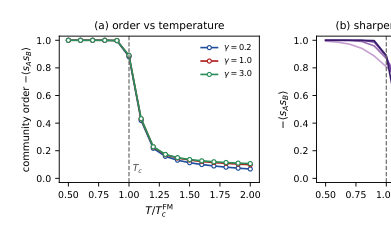
<figcaption class="paper-figure-caption"><b>Fig 4.</b> Figure 4: Exact community-ordered phase of the q = 2 Reichardt–Bornholdt model on the diamond. Order parameter −⟨σAσB⟩(hub anti-alignment: 1 when the two hubs occupy opposite communities). (a) Versus temperature at t = 6 (nt = 2732) for three resolutions γ: the community order switches off at the ferromagnetic critical temperature T FM c , essentially independent of γ. (b) As the lattice grows the transition sharpens into a step at T FM c ; below it the order is persistent, −⟨σAσB⟩→1 as n →∞. (c) The (γ, T) phase diagram: a community-ordered region for all γ &gt; 0 below T FM c (dashed).</figcaption>
</figure>
<figure class="paper-figure-card">
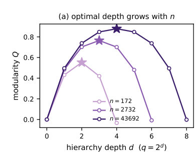
<figcaption class="paper-figure-caption"><b>Fig 5.</b> Figure 5: Hierarchical community structure with a growing number of states. (a) Modularity Q of the depth-d nested partition (q = 2d communities), Eq. (22), versus depth for three sizes; stars mark the optimum, which moves to finer resolution as n grows. (b) The optimal number of communities qopt = 2d⋆tracks √n (dashed), Eq. (23), over t ≤9.</figcaption>
</figure>
</div>

<p><strong>Summary.</strong> This work establishes that the statistical concept of community detection, quantified by the Ramsey number, has a deep physical underpinning. By mapping network structure onto renormalization group flow and analyzing it with spin Hamiltonians, the authors prove that the detected community pattern is not merely an artifact but represents a genuine, thermodynamically ordered phase in the system.</p>
<p><strong>Why it may be interesting.</strong> While focused on network science metrics, the rigorous application of RG flow and phase transition theory (Potts model) to determine intrinsic structural order provides powerful analogies for understanding emergent phases in complex quantum many-body systems or disordered quantum materials.</p>
<details>
<summary>Detailed structure</summary>
<p><strong>Main problem.</strong> The paper determines when a network's community structure becomes an 'objective fact,' quantified by the Ramsey community number ($r_\kappa$), and establishes its thermodynamic stability.</p>
<p><strong>Main result.</strong> The Ramsey community number is shown to be an exact renormalization-group crossing, and the optimal partition forms a persistent, thermodynamically ordered hierarchy of communities.</p>
<p><strong>Method.</strong> The analysis combines Bayesian model comparison (evidence ratio) with Renormalization Group (RG) techniques applied to lattice models and spin Hamiltonians.</p>
<p><strong>Model / system.</strong> The study uses the diamond hierarchical lattice structure and analyzes community ordering via a generalized Potts Hamiltonian, which is related to modularity maximization.</p>
<p><strong>Key observables.</strong> Ramsey community number ($r_\kappa$), block-pair sufficient statistics eigenvalues ($\lambda_{	ext{vol}}, \lambda_{	ext{seam}}$), evidence density flow, and the critical temperatures ($T_c(q)$) for phase transitions.</p>
<p><strong>Important parameters / regimes.</strong> The detection threshold $q$, lattice parameters $(b, s)$, and community depth/number ($q_{	ext{opt}} \sim \sqrt{n}$).</p>
<p><strong>Assumptions / limitations.</strong> The analysis relies on the exact nature of real-space decimation on the diamond lattice to map RG steps precisely.</p>
<p><strong>Figures summary.</strong> Figures illustrate the construction of the lattice, the flow of block densities towards a fixed point, and phase diagrams showing community order vs. temperature for different hierarchy depths.</p>
<p><strong>Paper structure.</strong> The paper progresses from defining $r_\kappa$ via RG analysis on the diamond lattice to deriving closed-form expressions for $r_\kappa$, culminating in placing the structure into a thermodynamic framework using a Potts Hamiltonian to prove persistent, level-by-level ordering.</p>
</details>
<details>
<summary>Abstract</summary>
<p>The Ramsey community number $r_k$ is the smallest size at which a network is better described by communities than by none, under a Bayesian detection rule. On the diamond hierarchical lattice we show that $r_k$ is an exact renormalization-group crossing: the block-model sufficient statistics obey a linear map with eigenvalues $\{bs,b\}$, the degree-corrected evidence density flows to $\ln K$ at a community fixed point, and $r_k$ is the generation at which the running evidence clears the detection threshold. Degree correction advances detection by two generations. We derive $r_k(b,s;q)$ in closed form for the whole family. Finally, placing on the lattice the Reichardt--Bornholdt community Hamiltonian -- whose ground state is the partition itself -- we find an exact community-ordered phase: below the ferromagnetic critical temperature the two hubs lock into opposite communities for any resolution $γ>0$, a staggered order that persists as $n\to\infty$. Allowing each nested sub-community its own label, the optimal partition is a hierarchy of $q_{\rm opt}\sim\sqrt{n}$ communities, so the number of Potts states that best describes the network grows with the network. This hierarchy orders thermally level by level, through a cascade of first-order transitions whose temperatures fall as $1/\ln q$, so every stable level persists as $n\to\infty$: the emergent partition is detectable, optimal, and thermodynamically ordered.</p>
</details>
<p><sub><a href="#top">↑ back to top</a></sub></p>

<p><a id="paper-2607.05591"></a></p>
<h3 id="wilczek-zee-realization-of-uhlmann-parallel-transport"><a href="http://arxiv.org/abs/2607.05591v1">Wilczek-Zee Realization of Uhlmann Parallel Transport</a></h3>
<p><strong>Authors:</strong> Yu-Huan Huang, Xu-Yang Hou, Jia-Chen Tang, Hao Guo<br>
<strong>Type:</strong> theory · <strong>Category:</strong> quantum information and computing · <strong>PDF:</strong> <a href="https://arxiv.org/pdf/2607.05591v1">https://arxiv.org/pdf/2607.05591v1</a><br>
<strong>Analysis basis:</strong> full PDF text, analyzed in chunks
<strong>Topic relevance:</strong> <code>analog quantum simulation</code> <strong>2/5</strong> · <code>entanglement &amp; information structure</code> <strong>2/5</strong> · <code>non-equilibrium dynamics</code> <strong>2/5</strong> · <code>Keldysh / 2PI / non-Gaussian methods</code> <strong>1/5</strong> · <code>correlated / nonlocal dissipation</code> <strong>1/5</strong> · <code>driven-dissipative phase transition</code> <strong>1/5</strong> · <code>methods for driven-dissipative</code> <strong>1/5</strong></p>
<div class="figure-strip-hint">↔ Scroll figures horizontally</div>
<div class="paper-figures-scroll">
<figure class="paper-figure-card">
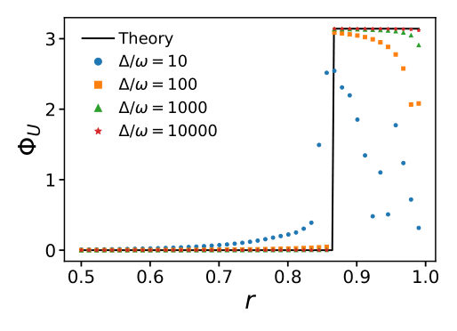
<figcaption class="paper-figure-caption"><b>Fig 1.</b> Figure 1: Uhlmann phase ΦU versus the purity parameter r. The solid black line is the theoretical prediction, while the symbols show numerical results obtained from adiabatic evo- lution under the parent Hamiltonian for ∆/ω = 10 (circles), 100 (squares), 1000 (triangles), and 10000 (stars).</figcaption>
</figure>
</div>

<p><strong>Summary.</strong> The paper solves the challenge of simulating mixed-state geometric phases (Uhlmann phase) using only standard, Hermitian Hamiltonian evolution. By embedding the system into an enlarged four-level model, they prove that this complex phase can be exactly reproduced by the Wilczek-Zee connection in 1D parameter spaces. This offers a purely quantum mechanical framework for studying topological invariants of mixed states.</p>
<p><strong>Why it may be interesting.</strong> This work provides a powerful theoretical tool by mapping a complex, non-Hermitian geometric phase problem onto standard, well-understood Hermitian Hamiltonian dynamics, which is crucial for quantum simulation and topological characterization.</p>
<details>
<summary>Detailed structure</summary>
<p><strong>Main problem.</strong> The primary goal is to find a purely Hermitian, Hamiltonian-based method to simulate the mixed-state geometric phase (Uhlmann phase), which is otherwise complicated by non-Hermitian dynamics.</p>
<p><strong>Main result.</strong> For one-dimensional parameter loops, they prove that the Uhlmann connection exactly matches the Wilczek-Zee connection derived from an auxiliary four-level Hermitian Hamiltonian. This establishes a purely quantum mechanical route to calculating mixed-state geometric phases.</p>
<p><strong>Method.</strong> The authors construct an enlarged, Hermitian parent Hamiltonian whose degenerate ground state subspace is used to calculate the WZ connection and compare it directly to the definition of the Uhlmann connection.</p>
<p><strong>Model / system.</strong> The system involves qubit density matrices undergoing adiabatic cyclic evolution along a 1D loop. This dynamics is embedded into an auxiliary four-level Hermitian Hamiltonian $H(t) = \Delta (I - P(t))$.</p>
<p><strong>Key observables.</strong> Uhlmann phase ($\Phi_U$), Uhlmann holonomy matrix ($\mathcal{U}_U$), and the comparison between $   ext{AWZ}$ and $ ext{AU}$.</p>
<p><strong>Important parameters / regimes.</strong> The purity parameter ($r$) of the density matrix, and the gap ratio ($\Delta/\omega$) used in the adiabatic approximation.</p>
<p><strong>Assumptions / limitations.</strong> The construction is rigorously proven only for one-dimensional parameter spaces; extension to 2D requires satisfying a Frobenius integrability condition, which is generally violated.</p>
<p><strong>Figures summary.</strong> Figure 1 compares the calculated Uhlmann phase ($\Phi_U$) versus purity ($r$), showing numerical convergence onto theoretical predictions across varying gap ratios ($\Delta/\omega$).</p>
<p><strong>Paper structure.</strong> The paper first establishes the problem of simulating mixed-state phases. It then constructs the auxiliary Hamiltonian and derives the equivalence for 1D loops, confirming adiabatic reproduction. Finally, it analyzes the failure of this construction in higher dimensions due to integrability constraints.</p>
</details>
<details>
<summary>Abstract</summary>
<p>The Uhlmann phase extends geometric phases to mixed quantum states via a parallel-transport condition on purification amplitudes, yet its direct implementation under standard Hamiltonian dynamics is obstructed by the non-Hermitian nature of the purification. We establish that for any smooth one-dimensional closed loop of full-rank qubit density matrices, there exists a four-level Hermitian parent Hamiltonian whose doubly degenerate ground-state subspace carries a Wilczek--Zee connection exactly equal to the Uhlmann connection. Consequently, the Uhlmann holonomy is faithfully reproduced by adiabatic evolution in the enlarged system. We further prove that this auxiliary-field construction is obstructed in generic two-dimensional parameter spaces by a Frobenius integrability condition, which we derive explicitly. The one-dimensional Uhlmann phase is thus placed on the same footing as the non-Abelian Berry phase, offering a purely Hermitian, Hamiltonian-based route to simulating mixed-state geometric phases. Numerical integration of the adiabatic dynamics confirms the exact correspondence and validates the convergence to the Uhlmann holonomy in the large-gap limit.</p>
</details>
<p><sub><a href="#top">↑ back to top</a></sub></p>

<p><a id="paper-2607.05643"></a></p>
<h3 id="coherent-control-of-channel-dilations-activate-temporal-bell-nonclassicality"><a href="http://arxiv.org/abs/2607.05643v1">Coherent Control of Channel Dilations Activate Temporal Bell Nonclassicality</a></h3>
<p><strong>Authors:</strong> H S Karthik, Akshata Shenoy H, A R Usha Devi, Marcin Pawłowski<br>
<strong>Type:</strong> theory · <strong>Category:</strong> quantum information and computing · <strong>PDF:</strong> <a href="https://arxiv.org/pdf/2607.05643v1">https://arxiv.org/pdf/2607.05643v1</a><br>
<strong>Analysis basis:</strong> full PDF text, analyzed in chunks
<strong>Topic relevance:</strong> <code>correlated / nonlocal dissipation</code> <strong>2/5</strong> · <code>entanglement &amp; information structure</code> <strong>2/5</strong> · <code>quantum measurements</code> <strong>2/5</strong> · <code>driven-dissipative phase transition</code> <strong>1/5</strong> · <code>methods for driven-dissipative</code> <strong>1/5</strong> · <code>non-equilibrium dynamics</code> <strong>1/5</strong></p>
<div class="figure-strip-hint">↔ Scroll figures horizontally</div>
<div class="paper-figures-scroll">
<figure class="paper-figure-card">
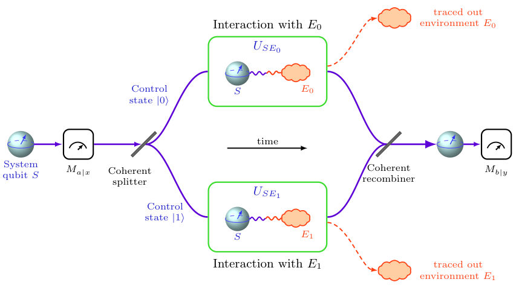
<figcaption class="paper-figure-caption"><b>Fig 1.</b> FIG. 1. Schematic of a temporal CHSH inequality experiment using sequential measurements and coherently controlled interaction of the system with independent environments: First, an initial quantum state is measured. Next, the state undergoes noisy evolution resulting from the unitary interaction with independent environments E1 and E2. A control qubit C (acting as the which path qubit) coherently controls the choice of this interaction. After the coherent evolution, the environments are traced out and the branches are coherently recombined (control post-selection and trace out). Finally, the effectively evolved system undergoes a second measurement. Time runs from left to right.</figcaption>
</figure>
<figure class="paper-figure-card">
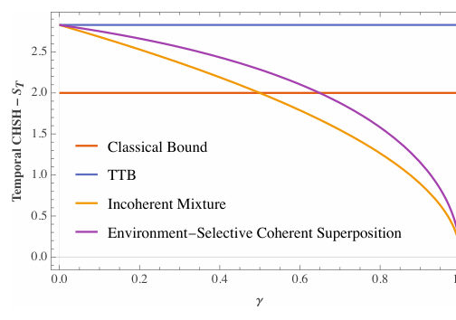
<figcaption class="paper-figure-caption"><b>Fig 2.</b> FIG. 2. The temporal CHSH inequality as a function of the damp- ing parameter γ: The red and the blue lines represent the classical bound and the temporal Tsirelson bound (TTB) respectively. The orange curve corresponds to the case where the action of the envi- ronments are incoherently controlled. The purple curve represents the coherent control of the channel implementations using indepen- dent environments. It is observed that the violation of the temporal CHSH inequality is activated beyond the incoherently controlled (or the deterministic) ADC threshold and persists up to γ ≈0.65.</figcaption>
</figure>
<figure class="paper-figure-card">
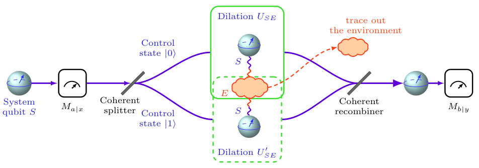
<figcaption class="paper-figure-caption"><b>Fig 3.</b> FIG. 3. Schematic of a temporal CHSH inequality experiment using sequential measurements and coherently controlled Stinespring dilations of the noise channel acting on the system : First, an initial quantum state is measured. Following which, the state undergoes noisy evolution resulting from the unitary interaction with an environment E. A control qubit C (acting as the which path qubit) coherently controls the choice of Stinespring dilations. After this coherent evolution, the environment is traced out and the branches are coherently recombined (control post-selection and trace out). Lastly, the effectively evolved system undergoes the second measurement. Time runs from left to right.</figcaption>
</figure>
<figure class="paper-figure-card">
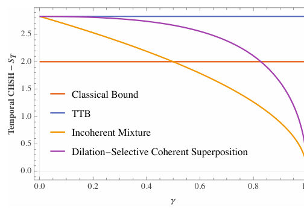
<figcaption class="paper-figure-caption"><b>Fig 4.</b> FIG. 4. A plot of the variation in the temporal CHSH inequality as a function of γ is shown. The orange curve represents the case when Stinespring dilations are incoherently chosen. The purple curve is due to coherent selection of the unitarily equivalent dilations. Notice that the violation of the temporal CHSH inequality shows activation beyond the ADC threshold and up to γ ≈0.83.</figcaption>
</figure>
<figure class="paper-figure-card">
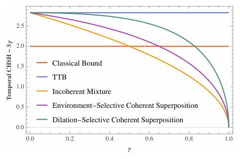
<figcaption class="paper-figure-caption"><b>Fig 5.</b> FIG. 5. The temporal CHSH inequality as a function of γ under dif- ferent considerations: (1) The orange curve denotes the case where the choice of the dilation is deterministic or incoherent (classical) mixture, (2) The purple is due to coherent control of the channels with independent environments and (3) The green corresponds to the coherent control of unitary equivalent dilations with the same envi- ronment.</figcaption>
</figure>
</div>

<p><strong>Summary.</strong> The paper addresses how environmental noise degrades temporal quantum correlations, measured by the CHSH inequality. It compares two ways to model controlled noise: independent environments versus equivalent Stinespring dilations. The key finding is that coherently controlling the dilation structure allows for a much broader revival of Bell nonclassicality than previously thought possible.</p>
<p><strong>Why it may be interesting.</strong> This work provides a concrete, measurable resource (the choice of dilation) to enhance quantum tests in noisy environments, which is crucial for developing robust protocols in open quantum systems theory relevant to AMO physics.</p>
<details>
<summary>Detailed structure</summary>
<p><strong>Main problem.</strong> The research investigates how coherent control over noisy quantum evolutions can revive the violation of the temporal Clauser-Horne-Shimony-Holt (CHSH) inequality, which is otherwise degraded by environmental noise.</p>
<p><strong>Main result.</strong> Coherent control using equivalent Stinespring dilations significantly extends the range of temporal CHSH violation compared to independent environment models or deterministic scenarios. This highlights that the choice of dilation realization is an operationally relevant resource in testing quantum correlations.</p>
<p><strong>Method.</strong> The authors compare two physical implementations—independent environmental interactions versus unitarily equivalent Stinespring dilations—by calculating the temporal CHSH parameter ($S_T$) using joint probability distributions derived from these controlled evolutions.</p>
<p><strong>Model / system.</strong> The system analyzed is a single qubit undergoing sequential measurements separated by an intermediate dynamical evolution modeled by a quantum channel, specifically focusing on the amplitude-damping channel (ADC). The dynamics are explored via Stinespring dilations and Choi–Jamiołkowski representations.</p>
<p><strong>Key observables.</strong> Temporal CHSH parameter ($S_T$), which must exceed 2 to witness nonclassicality; violation of the temporal CHSH inequality.</p>
<p><strong>Important parameters / regimes.</strong> Noise strength ($\gamma$, related to damping), and the specific choice between independent environments versus equivalent Stinespring dilations.</p>
<p><strong>Assumptions / limitations.</strong> The analysis relies on assumptions derived from Macrorealism (MR) regarding physical properties existing independently of observation, and non-invasive measurements.</p>
<p><strong>Figures summary.</strong> Figures compare temporal CHSH violation vs. damping strength ($\gamma$) for various control methods: Classical Bound, Incoherent Mixture, Environment-Selective Superposition, and Dilation-Selective Superposition, showing the superior activation range of the latter.</p>
<p><strong>Paper structure.</strong> The paper establishes the problem using the temporal CHSH inequality under noise. It then develops mathematical frameworks comparing independent environment models against equivalent Stinespring dilation controls. The core argument is built by calculating $S_T$ for both control types and demonstrating that coherent control at the dilation level yields superior results.</p>
</details>
<details>
<summary>Abstract</summary>
<p>The temporal Clauser-Horne-Shimony-Holt (CHSH) inequality witnesses the nonclassicality of temporal correlations, but its violation is generally degraded by environmental noise. Here, we show that violation of the temporal CHSH inequality can be revived through coherent control of noisy quantum evolutions. We compare two physically distinct implementations: coherent control of noisy evolutions induced by interaction of the system with independent environments, and coherent control of two physically distinct, unitarily equivalent Stinespring dilations of the same noisy channel. Although these constructions generate identical deterministic system dynamics, they induce distinctly different post-selected evolutions. With a focus on the amplitude damping channel (ADC), we show that coherent control of equivalent dilations extend the range of temporal CHSH inequality violation well beyond both the incoherently controlled, or deterministic, scenario and what is achievable with independent environments. Under setting-independent post-selection of the coherent control implementation, the resulting violation further certifies that the channel is not strongly CHSH nonlocality-breaking. Our results identify the choice of Stinespring dilation as an operationally relevant resource in coherently controlled tests of temporal quantum correlations.</p>
</details>
<p><sub><a href="#top">↑ back to top</a></sub></p>

<p><a id="paper-2607.05951"></a></p>
<h3 id="electron-phonon-dephasing-in-ultrathin-disordered-films-from-power-laws-to-diagnostic-maps"><a href="http://arxiv.org/abs/2607.05951v1">Electron-Phonon Dephasing in Ultrathin Disordered Films: From Power Laws to Diagnostic Maps</a></h3>
<p><strong>Authors:</strong> Eugeniy Yu. Beliayev<br>
<strong>Type:</strong> both · <strong>Category:</strong> disordered systems and neural networks · <strong>PDF:</strong> <a href="https://arxiv.org/pdf/2607.05951v1">https://arxiv.org/pdf/2607.05951v1</a><br>
<strong>Analysis basis:</strong> full PDF text, analyzed in chunks
<strong>Topic relevance:</strong> <code>non-equilibrium universality</code> <strong>2/5</strong> · <code>Keldysh / 2PI / non-Gaussian methods</code> <strong>1/5</strong> · <code>analog quantum simulation</code> <strong>1/5</strong> · <code>correlated / nonlocal dissipation</code> <strong>1/5</strong> · <code>driven-dissipative phase transition</code> <strong>1/5</strong> · <code>methods for driven-dissipative</code> <strong>1/5</strong> · <code>non-equilibrium dynamics</code> <strong>1/5</strong></p>
<div class="figure-strip-hint">↔ Scroll figures horizontally</div>
<div class="paper-figures-scroll">
<figure class="paper-figure-card">
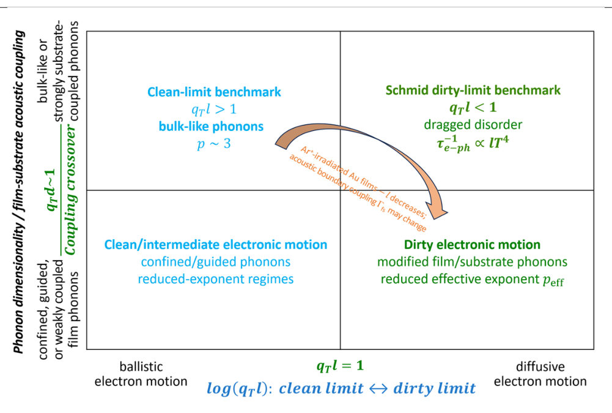
<figcaption class="paper-figure-caption"><b>Fig 1.</b> Fig. 1. Diagnostic map for electron–phonon dephasing in ultrathin films. The horizontal axis represents 𝑞𝑇𝑙, while the vertical axis represents phonon confinement and film-substrate acoustic coupling. The arrow indicates that Ar+-ion irradiation may simultaneously reduce the electronic mean free path 𝑙 and modify the acoustic boundary condition 𝛤𝑓𝑠.</figcaption>
</figure>
<figure class="paper-figure-card">
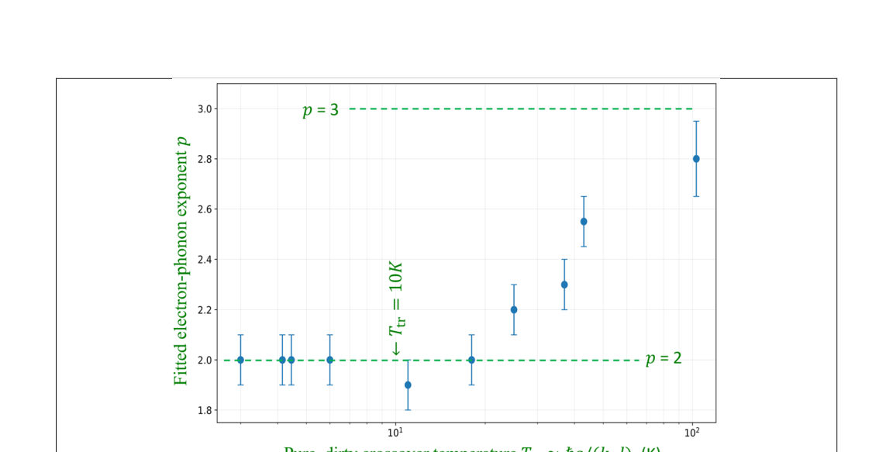
<figcaption class="paper-figure-caption"><b>Fig 2.</b> Fig. 2. Ar+-ion-irradiated Au films as a controlled-disorder series. The fitted electron–phonon exponent 𝑝 is replotted as a function of the pure–dirty crossover temperature 𝑇tr ≃ℏ𝑠/(𝑘𝐵𝑙). Data points are digitized from Ref. [5]; the lines are guides to the eye. The exponent remains close to 2 for 𝑇tr ≲10 K and increases toward 2.8 as 𝑇tr enters and exceeds the experimental temperature window. This representation emphasizes the crossover character of the fitted exponent rather than treating 𝑝 as a universal constant.</figcaption>
</figure>
<figure class="paper-figure-card">
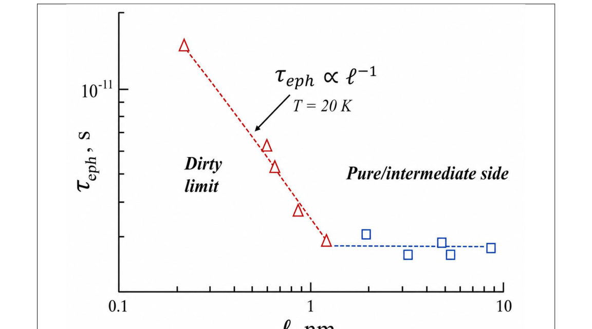
<figcaption class="paper-figure-caption"><b>Fig 3.</b> Fig. 3. Approximate reconstruction of 𝜏𝑒−𝑝ℎ(20 𝐾) versus mean free path l in Ar+-ion-irradiated Au films. The reconstruction is based on digitized coordinates from the published figure [5] and is intended as an illustrative replot, not as primary data. The short-l branch shows a pronounced increase of 𝜏𝑒−𝑝ℎ as l decreases, corresponding to suppression of 𝜏𝑒−𝑝ℎ</figcaption>
</figure>
</div>

<p><strong>Summary.</strong> This paper argues that electron-phonon dephasing exponents in thin disordered metals are not universal constants but rather 'crossover observables.' By analyzing controlled disorder series, the authors propose a diagnostic map framework that requires considering multiple parameters—like clean-to-dirty ratios and phonon confinement—for accurate physical interpretation.</p>
<p><strong>Why it may be interesting.</strong> While focused on condensed matter, the concept of mapping complex physical behavior onto a diagnostic space based on multiple interacting parameters (like $qT l$ and confinement) is analogous to constructing feature spaces in advanced machine learning models.</p>
<details>
<summary>Detailed structure</summary>
<p><strong>Main problem.</strong> The electron-phonon dephasing rate in ultrathin disordered metallic films is often modeled by a simple power law, but the exponent varies widely, suggesting it is not a universal constant.</p>
<p><strong>Main result.</strong> The exponent must be treated as a crossover observable whose interpretation requires considering multiple physical coordinates, such as the clean-to-dirty parameter and phonon confinement effects.</p>
<p><strong>Method.</strong> The authors analyze data across a controlled-disorder series using $    ext{Ar}^+$-ion irradiation to map out how the dephasing exponent changes relative to other system parameters.</p>
<p><strong>Model / system.</strong> The study focuses on electron-phonon dephasing ($   au_{e-  ext{ph}}^{-1}$) in ultrathin metallic films, specifically demonstrating results using $ ext{Ar}^+$-ion-irradiated Au films as a controlled-disorder platform.</p>
<p><strong>Key observables.</strong> Electron-phonon exponent ($p$), prefactor $A(l)$, and the pure-dirty crossover temperature ($T_{	ext{tr}}$).</p>
<p><strong>Important parameters / regimes.</strong> Clean-to-dirty parameter ($qT l$), phonon confinement, film thickness, and disorder character (dragged vs. static scattering potentials).</p>
<p><strong>Assumptions / limitations.</strong> The exponent $p$ is not a universal constant but an effective crossover observable dependent on multiple coupled physical parameters.</p>
<p><strong>Figures summary.</strong> Figures illustrate the dependence of the fitted exponent $p$ on the crossover temperature $T_{	ext{tr}}$ for irradiated Au films, and propose a diagnostic map correlating $p$ with other system coordinates.</p>
<p><strong>Paper structure.</strong> The paper establishes the problem by noting the variability of the power law exponent; it then develops a multi-parameter 'diagnostic map' framework using controlled disorder series data to show that simple single-variable fits are insufficient for interpretation.</p>
</details>
<details>
<summary>Abstract</summary>
<p>Electron-phonon dephasing in ultrathin disordered metallic films is often summarized by a power law, $τ_{e-ph}^{-1}=AT^p$. However, thin metals, alloys, and superconducting films exhibit effective exponents close to 2, 3, and 4, as well as intermediate nonuniversal values. We argue that in ultrathin supported films, the exponent should be treated not as a universal material constant, but as a crossover observable. Its interpretation requires several coordinates: the clean-to-dirty parameter $q_T l$, phonon confinement and film-substrate acoustic coupling, and the microscopic character of disorder.   The diagnostic picture is illustrated using Ar-ion-irradiated Au films as a controlled-disorder series. In these films, the fitted electron-phonon exponent remains near $p\simeq 2$ for low values of the pure-dirty crossover temperature $T_{tr}\simeq \hbar s/(k_B l)$ and increases toward $p\simeq 2.8$ as disorder increases. At the same time, the prefactor trend indicates suppression of electron-phonon scattering with decreasing mean free path, consistent with dirty-limit weakening rather than static-disorder enhancement. The persistence of $p<4$ points to the role of thin-film or film-substrate phonon effects. The resulting diagnostic map provides a compact framework for comparing electron-phonon dephasing data in ultrathin disordered films.</p>
</details>
<p><sub><a href="#top">↑ back to top</a></sub></p>

<p><a id="paper-2607.06279"></a></p>
<h3 id="bockstein-braiding-statistics-versus-three-loop-braiding"><a href="http://arxiv.org/abs/2607.06279v1">Bockstein Braiding Statistics Versus Three-Loop Braiding</a></h3>
<p><strong>Authors:</strong> Hanyu Xue<br>
<strong>Type:</strong> theory · <strong>Category:</strong> strongly correlated electrons · <strong>PDF:</strong> <a href="https://arxiv.org/pdf/2607.06279v1">https://arxiv.org/pdf/2607.06279v1</a><br>
<strong>Analysis basis:</strong> full PDF text, analyzed in chunks
<strong>Topic relevance:</strong> <code>analog quantum simulation</code> <strong>2/5</strong> · <code>Keldysh / 2PI / non-Gaussian methods</code> <strong>1/5</strong> · <code>driven-dissipative phase transition</code> <strong>1/5</strong> · <code>entanglement &amp; information structure</code> <strong>1/5</strong> · <code>methods for driven-dissipative</code> <strong>1/5</strong></p>
<div class="figure-strip-hint">↔ Scroll figures horizontally</div>
<div class="paper-figures-scroll">
<figure class="paper-figure-card">
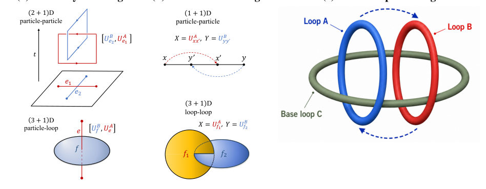
<figcaption class="paper-figure-caption"><b>Fig 1.</b> Figure 1: Comparison of ordinary braiding, Bockstein braiding, and three-loop braiding. Operator 𝑈Δ is the creation (hopping) operator of an excitation on 𝜕Δ. (a) Ordinary braiding is represented by the commutator  𝑈𝐵,𝑈𝐴 = (𝑈𝐵)−1(𝑈𝐴)−1𝑈𝐵𝑈𝐴. The examples depict particle-particle braiding in (2+1) dimensions and particle-loop braiding in (3+1) dimensions. (b) Bockstein braiding is represented by 𝑊𝑁(𝑋,𝑌) = 𝑌−1𝑋−1 𝑁(𝑌𝑋)𝑁for hopping operators whose supports have a staggered one-dimensional overlap. The examples depict particle-particle statistics in (1+1) dimensions and loop-loop statistics in (3+1) dimensions. (c) In three-loop braiding, two loops braid while both are linked with a third...</figcaption>
</figure>
<figure class="paper-figure-card">
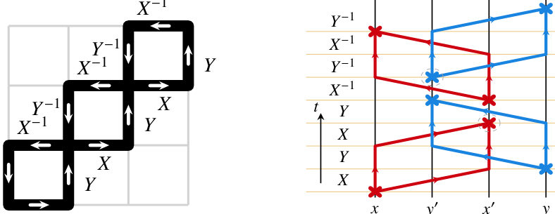
<figcaption class="paper-figure-caption"><b>Fig 2.</b> Figure 2: Two complementary pictures of the Bockstein braiding process. In (a), the lattice point (𝑖, 𝑗) represents the state with 𝑖units of the 𝐴-type excitation and 𝑗units of the 𝐵-type excitation, with 𝑖, 𝑗∈Z𝑁, for 𝑁= 3. Horizontal and vertical edges correspond to the actions of 𝑋and 𝑌, respectively, and the diagonal staircase compares the two alternating histories (𝑌𝑋)𝑁and (𝑋𝑌)𝑁. In (b), we draw the spacetime history of two Z𝑁particles for 𝑁= 2. The fusion of particles is drawn as a 0-dimensional event in spacetime and is linked by the worldline of the other particle species, producing a nontrivial topology analogous to braiding.</figcaption>
</figure>
</div>

<p><strong>Summary.</strong> This theoretical work rigorously compares two types of braiding statistics: Bockstein braiding ($W_N$) and conventional three-loop braiding. The authors show that $W_N$ exhausts all loop statistics arising from Abelian fusion rules, but the more complex three-loop braiding must possess non-Abelian features. This advances the understanding of topological order by providing a precise mathematical distinction between different types of quantum entanglement statistics.</p>
<p><strong>Why it may be interesting.</strong> While the focus is abstract topology, the rigorous mathematical machinery developed—relating quantum phases to cohomology groups and local cancellation criteria—is highly relevant for understanding topological order in condensed matter systems like fractional quantum Hall states or superconducting qubits.</p>
<details>
<summary>Detailed structure</summary>
<p><strong>Main problem.</strong> The paper compares Bockstein braiding statistics with conventional three-loop braiding for topological excitations to determine if they are mathematically equivalent.</p>
<p><strong>Main result.</strong> Conventional three-loop braiding goes beyond the classification of loop statistics derived from Abelian fusion rules, suggesting it requires non-Abelian fusion rules or exotic particle-loop interactions.</p>
<p><strong>Method.</strong> The authors use algebraic methods involving local cancellation criteria and cohomology theory to define and classify topological braiding processes ($W_N$).</p>
<p><strong>Model / system.</strong> The study analyzes topological excitations in $p$- and $q$-dimensional settings, using lattice models based on $\mathbb{Z}_N^2$ toric-code-type ground states.</p>
<p><strong>Key observables.</strong> Braiding phase (a value in U(1)), the Bockstein response $\tilde{\beta}(B)$, and the statistical process $W_N(X,Y)$.</p>
<p><strong>Important parameters / regimes.</strong> The finite order $N$ of the excitations is crucial for the quantization of the statistics.</p>
<p><strong>Assumptions / limitations.</strong> The classification relies on assuming Abelian fusion rules when deriving the cohomology bounds, which is then used to contrast with three-loop braiding.</p>
<p><strong>Figures summary.</strong> Figure 1 compares ordinary, Bockstein, and three-loop braiding in different dimensions. Figure 2 illustrates the Bockstein braiding process using lattice configurations and spacetime histories.</p>
<p><strong>Paper structure.</strong> The paper develops a general framework for classifying topological statistics via an 'Excitation Complex,' applies this to define $W_N$, proves its quantization on a lattice model, and finally contrasts this result with three-loop braiding theory.</p>
</details>
<details>
<summary>Abstract</summary>
<p>Braiding statistics of $p$- and $q$-dimensional topological excitations is conventionally defined in $p+q+2$ spatial dimensions. We find a novel statistical process $W_N(X,Y)=(Y^{-1}X^{-1})^N(YX)^N$ for two order-$N$ excitations in $p+q+1$ dimensions, detecting the Bockstein response $A\smile β(B)$. This new statistics and fermionic loop statistics exhaust all loop statistics in three dimensions whose fusion rules form an Abelian group $G$, classified by $H^5(B^2G,U(1))$. Surprisingly, conventional three-loop braiding goes beyond this classification, so it must have non-Abelian fusion rules. We suggest viewing three-loop braiding as particle-loop braiding together with exotic fusion rules between loops and point-like defects. We also try to clarify the relationship between statistics and symmetry anomaly.</p>
</details>
<p><sub><a href="#top">↑ back to top</a></sub></p>

<p><a id="paper-2607.05873"></a></p>
<h3 id="fixing-divergence-in-carleman-linearization-via-analytical-continuation"><a href="http://arxiv.org/abs/2607.05873v1">Fixing Divergence in Carleman Linearization via Analytical Continuation</a></h3>
<p><strong>Authors:</strong> Mingshuo Zhu, Hayato Higuchi, Hokuto Iwakiri, Kouki Nakamura, Naohisa Sueishi, Shih-Yen Tseng, Shoichiro Tsutsui<br>
<strong>Type:</strong> theory · <strong>Category:</strong> quantum information and computing · <strong>PDF:</strong> <a href="https://arxiv.org/pdf/2607.05873v1">https://arxiv.org/pdf/2607.05873v1</a><br>
<strong>Analysis basis:</strong> full PDF text, analyzed in chunks
<strong>Topic relevance:</strong> <code>non-equilibrium dynamics</code> <strong>2/5</strong> · <code>Keldysh / 2PI / non-Gaussian methods</code> <strong>1/5</strong> · <code>analog quantum simulation</code> <strong>1/5</strong> · <code>driven-dissipative phase transition</code> <strong>1/5</strong> · <code>methods for driven-dissipative</code> <strong>1/5</strong></p>
<div class="figure-strip-hint">↔ Scroll figures horizontally</div>
<div class="paper-figures-scroll">
<figure class="paper-figure-card">
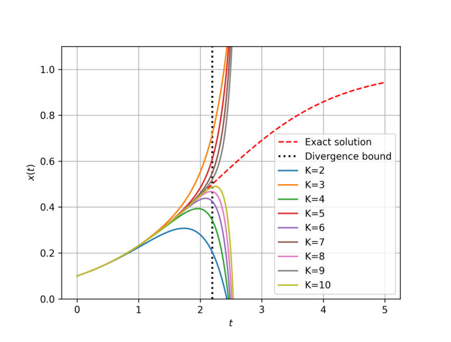
<figcaption class="paper-figure-caption"><b>Fig 1.</b> FIG. 1: Comparison of Carleman linearization with the exact solution of the logistic equation, a</figcaption>
</figure>
<figure class="paper-figure-card">
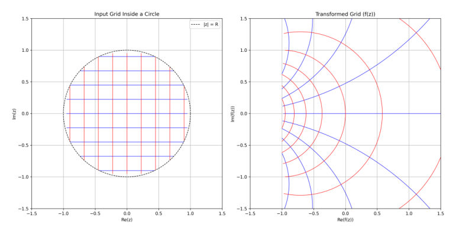
<figcaption class="paper-figure-caption"><b>Fig 2.</b> FIG. 2: Conformal mapping between the ω-plane and the ζ-plane. The unit disc (left) represents</figcaption>
</figure>
<figure class="paper-figure-card">
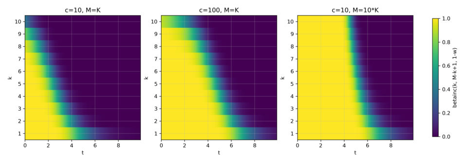
<figcaption class="paper-figure-caption"><b>Fig 3.</b> FIG. 3: Comparison of heatmaps for the regularized incomplete beta function I1−w(t)(k, M −k + 1)</figcaption>
</figure>
<figure class="paper-figure-card">

<figcaption class="paper-figure-caption"><b>Fig 4.</b> Figure 4 presents numerical results for several values of the scale parameter c, illustrating how c</figcaption>
</figure>
<figure class="paper-figure-card">
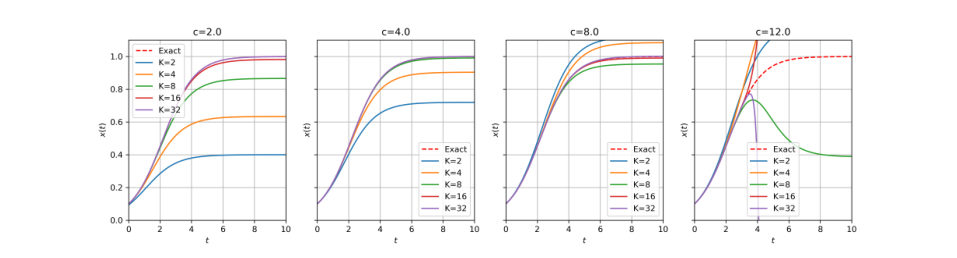
<figcaption class="paper-figure-caption"><b>Fig 5.</b> FIG. 4: Time evolution of the logistic solution after conformal mapping for x0 = 0.1 and several</figcaption>
</figure>
</div>

<p><strong>Summary.</strong> This paper tackles the fundamental issue of exponential divergence when using Carleman linearization to solve nonlinear differential equations. The authors introduce an advanced regularization method based on analytical continuation and conformal mapping to stabilize the solution over long times. They validate this approach both classically and by detailing a concrete implementation pathway using quantum algorithms like LCU.</p>
<p><strong>Why it may be interesting.</strong> This work directly addresses the computational bottleneck of simulating complex nonlinear dynamics by providing a mathematically rigorous technique to extend the time horizon achievable via linearization methods, which is crucial for quantum simulation feasibility.</p>
<details>
<summary>Detailed structure</summary>
<p><strong>Main problem.</strong> The core problem is overcoming the exponential divergence inherent when using Carleman linearization to solve nonlinear differential equations over long time scales.</p>
<p><strong>Main result.</strong> The authors propose a regularization technique based on analytical continuation via conformal mapping, successfully correcting the divergence for models like the logistic and KPP-Fisher equations.</p>
<p><strong>Method.</strong> They employ analytic continuation using Möbius transformations (conformal maps) to map the infinite domain of time evolution into a region where the series converges, followed by regularizing the resulting divergent factor.</p>
<p><strong>Model / system.</strong> The method is tested on classical nonlinear models such as the logistic equation and KPP-Fisher reaction-diffusion equations. For quantum implementation, it uses the Linear Combination of Unitaries (LCU) algorithm applied to the linearized system matrix.</p>
<p><strong>Key observables.</strong> Convergence behavior across time ($t$), stability regimes determined by parameters $c$ and initial conditions ($x_0$).</p>
<p><strong>Important parameters / regimes.</strong> The regularization parameter $c$, truncation orders $M$ and $K$, and the scale parameter derived from the conformal map.</p>
<p><strong>Assumptions / limitations.</strong> The method assumes that setting the regularization order $M$ proportional to the matrix size $K$ ($M \approx K$) is appropriate for convergence. The quantum implementation relies on embedding non-unitary matrices into unitary ones via block encoding.</p>
<p><strong>Figures summary.</strong> Figures compare Carleman linearization against exact solutions, showing divergence over time; they also present phase diagrams classifying convergence regimes based on parameters like $c$ and $x_0$ for various models.</p>
<p><strong>Paper structure.</strong> The paper first establishes the failure of naive Carleman expansion due to divergence. It then introduces the analytical continuation via conformal mapping (Möbius map) as a fix, regularizing the solution using a specific function. Finally, it validates this corrected method on multiple physical models and details its implementation using quantum algorithms like LCU.</p>
</details>
<details>
<summary>Abstract</summary>
<p>Nonlinear differential equations play a crucial role in modeling a wide range of phenomena, yet their solutions remain notoriously difficult to obtain. With the rapid development of quantum computing, quantum algorithms for efficiently solving such equations are actively being explored. One promising approach is based on Carleman linearization, which transforms nonlinear differential equations into linear systems. However, this method suffers from exponential divergence beyond a certain time scale. By reformulating the solutions in terms of eigenvalues and eigenvectors, we identify that this divergence originates from the Laurent expansion outside its neighborhood of convergence. To address this issue, we insert a regularized function to the divergent solution hinted by analytical continuation. We validate this divergence-correction method on both the logistic equation and some other partial differential equations like KPP-Fisher equations and Phase-Field models under periodic conditions. We implement our method for the logistic equation using the Linear Combination of Unitaries (LCU) quantum algorithm, providing a detailed complexity and error analysis.</p>
</details>
<p><sub><a href="#top">↑ back to top</a></sub></p>

<p><a id="paper-2607.06500"></a></p>
<h3 id="leveraging-metrologically-useful-states-in-quantum-reservoir-networks"><a href="http://arxiv.org/abs/2607.06500v1">Leveraging Metrologically Useful States in Quantum Reservoir Networks</a></h3>
<p><strong>Authors:</strong> Erik L. Connerty, Margarite LaBorde, Ethan N. Evans<br>
<strong>Type:</strong> theory · <strong>Category:</strong> quantum information and computing · <strong>PDF:</strong> <a href="https://arxiv.org/pdf/2607.06500v1">https://arxiv.org/pdf/2607.06500v1</a><br>
<strong>Analysis basis:</strong> full PDF text, analyzed in chunks
<strong>Topic relevance:</strong> <code>non-equilibrium dynamics</code> <strong>2/5</strong> · <code>driven-dissipative phase transition</code> <strong>1/5</strong> · <code>entanglement &amp; information structure</code> <strong>1/5</strong> · <code>methods for driven-dissipative</code> <strong>1/5</strong> · <code>non-equilibrium universality</code> <strong>1/5</strong></p>
<div class="figure-strip-hint">↔ Scroll figures horizontally</div>
<div class="paper-figures-scroll">
<figure class="paper-figure-card">
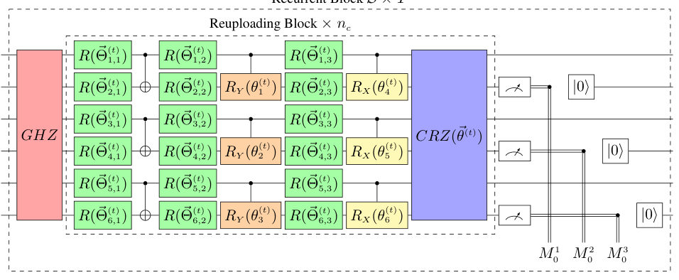
<figcaption class="paper-figure-caption"><b>Fig 1.</b> Figure 1: The GHZ QRN Circuit. As before, the inner block named the “Reuploading Block” is repeated nc = 3 times in all experiments, as this reuploadng procedure has been shown to improve performance. The outer “Recurrent Block” is repeated for every time-step of the input data. A “GHZ” unitary is performed at the start of every “Recurrent Block” and serves to create an optimal reservoir-like state. The “CRZ” operation at the end of each “Reuploading Block” has been modified to have only adjacent connections, allowing for no SWAP operations when mapping to an IBM Heron R2 QPU. At the end of each “Recurrent Block”, a measurement is taken on half of the qubits, and those qubits are reset to...</figcaption>
</figure>
<figure class="paper-figure-card">
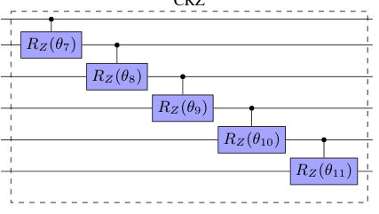
<figcaption class="paper-figure-caption"><b>Fig 2.</b> Figure 2: Circuit depiction of the cascaded CRZ gate used in the QRN.</figcaption>
</figure>
<figure class="paper-figure-card">
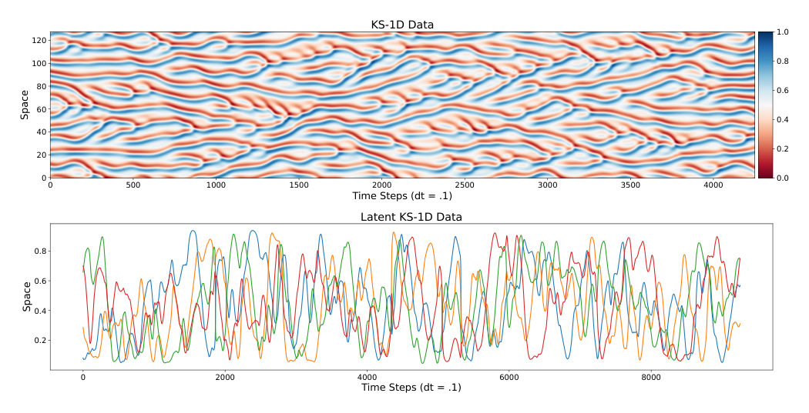
<figcaption class="paper-figure-caption"><b>Fig 3.</b> Figure 4: 1-D Kuramoto Sivashinsky data. The top data is the original data with n = 128 degrees of freedom, the bottom is the latent space representation with only n = 4.</figcaption>
</figure>
<figure class="paper-figure-card">
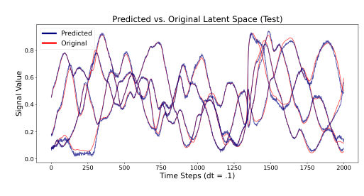
<figcaption class="paper-figure-caption"><b>Fig 4.</b> Figure 5: Latent space test data performance of the QRN with GHZ block.</figcaption>
</figure>
<figure class="paper-figure-card">
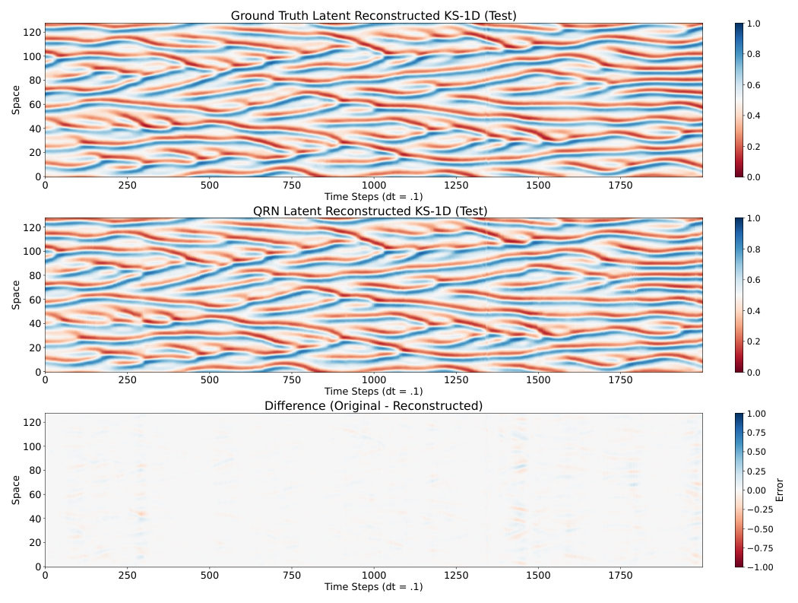
<figcaption class="paper-figure-caption"><b>Fig 5.</b> Figure 6: Decoded latent space representation of the KS-1D system compared to the ground truth decoded latents for (t + 1) predictions. The top figure denotes the decoded ground truth latent. The middle figure shows the output after being passed through the QRN for time-series prediction and then through the decoder for reconstruction. The bottom figure shows the residual between the reconstructed ground truth and the reconstructed prediction. Notably, the autoencoder itself introduces some small errors to the reconstruction, but the results of the QRN are close to the original with the (t + 1) prediction task.</figcaption>
</figure>
</div>

<p><strong>Summary.</strong> The paper proposes using an enhanced Quantum Reservoir Network (QRN) architecture to predict the behavior of chaotic PDEs like the Kuramoto-Sivashinsky system. By incorporating metrologically-useful GHZ states into the circuit design, the authors achieve superior prediction accuracy compared to standard QRN implementations or classical methods. This demonstrates a powerful pathway for leveraging quantum entanglement in machine learning for complex physical modeling.</p>
<p><strong>Why it may be interesting.</strong> This work directly addresses applying quantum resources to model complex, non-equilibrium dynamics found in fluid physics and chaos theory, which is a major frontier for quantum simulation.</p>
<details>
<summary>Detailed structure</summary>
<p><strong>Main problem.</strong> The core problem is predicting chaotic partial differential equations (PDEs) using quantum computation.</p>
<p><strong>Main result.</strong> The proposed Quantum Reservoir Network (QRN) utilizing metrologically-useful GHZ state preparation significantly outperforms alternative QRN implementations and classical benchmarks in predicting the latent space of the Kuramoto-Sivashinsky system.</p>
<p><strong>Method.</strong> A hybrid approach combining a quantum reservoir network with a classical autoencoder is used to map high-dimensional time-series data into a low-dimensional, predictable latent space representation.</p>
<p><strong>Model / system.</strong> The model targets the 1-D Kuramoto-Sivashinsky (KS) system, a high-dimensional chaotic PDE. The quantum circuit uses recurrent blocks and incorporates GHZ state preparation to enhance entanglement and measurement sensitivity.</p>
<p><strong>Key observables.</strong> Root Mean Square Error (RMSE) on the test set latent space KS system; Quantum Fisher Information (QFI); expectation values of readout qubits over time steps.</p>
<p><strong>Important parameters / regimes.</strong> The number of qubits ($n_q$), the depth of the circuit, and the number of measurement shots ($    ext{nshots}$) are critical parameters analyzed for scaling behavior.</p>
<p><strong>Assumptions / limitations.</strong> The method assumes that embedding the data into a quantum state space using specific unitary transformations (like those generating GHZ states) can capture the necessary dynamics for accurate prediction.</p>
<p><strong>Figures summary.</strong> Figures illustrate the full GHZ QRN Circuit structure, compare latent space test performance across different circuit types (GHZ vs. random/none), and show reconstructed PDE output compared to ground truth data.</p>
<p><strong>Paper structure.</strong> The paper introduces the problem of chaotic PDE prediction, details the hybrid QRN methodology incorporating metrologically-useful states (GHZ unitary), presents rigorous simulations comparing performance against baselines, and concludes with analysis of scaling laws and potential limitations.</p>
</details>
<details>
<summary>Abstract</summary>
<p>Interest in using quantum computers for the purpose of predicting chaotic partial differential equations (PDEs) has been growing with the advent of newer low-error quantum computers and robust simulation tools. In this paper, we present a method that utilizes a quantum reservoir network (QRN) to predict latent space representations of the high-dimensional chaotic 1-D Kuramoto-Sivashinksy (KS) system. This hybrid approach takes advantage of advancements in classical machine learning (ML) through the use of a classical autoencoder as well as techniques from quantum metrology through the use of a unitary that creates metrologically-useful states. Through rigorous simulation and analysis, we show that the proposed method outperforms alternative QRN implementations without this metrologically-useful state preparation, and also show better performance than classical echo-state networks when weight regularization is not used. Finally, we bring to light potential issues that can arise when using autoencoders within QRC pipelines.</p>
</details>
<p><sub><a href="#top">↑ back to top</a></sub></p>

<p><a id="paper-2607.06472"></a></p>
<h3 id="provable-learning-separation-for-predicting-time-evolution-of-quantum-many-body-systems"><a href="http://arxiv.org/abs/2607.06472v1">Provable learning separation for predicting time-evolution of quantum many-body systems</a></h3>
<p><strong>Authors:</strong> Rahul Bandyopadhyay, Riccardo Molteni, Jens Eisert, Vedran Dunjko, Sofiene Jerbi<br>
<strong>Type:</strong> theory · <strong>Category:</strong> quantum information and computing · <strong>PDF:</strong> <a href="https://arxiv.org/pdf/2607.06472v1">https://arxiv.org/pdf/2607.06472v1</a><br>
<strong>Analysis basis:</strong> full PDF text, analyzed in chunks
<strong>Topic relevance:</strong> <code>analog quantum simulation</code> <strong>2/5</strong> · <code>driven-dissipative phase transition</code> <strong>1/5</strong> · <code>entanglement &amp; information structure</code> <strong>1/5</strong> · <code>methods for driven-dissipative</code> <strong>1/5</strong> · <code>non-equilibrium dynamics</code> <strong>1/5</strong></p>
<div class="figure-strip-hint">↔ Scroll figures horizontally</div>
<div class="paper-figures-scroll">
<figure class="paper-figure-card">
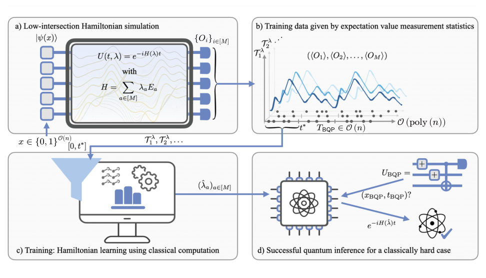
<figcaption class="paper-figure-caption"><b>Fig 1.</b> FIG. 1: A visualization of the key ideas of the present work. (a) Our training samples are generated by the time-evolution of a low-intersection Hamiltonian H (λ) for randomly chosen times t ∼Unif ([0, T]) acting on some initial probe state vector |ψ (x)⟩. (b) We consider as our labels a vector of expectation values evaluated on a set of certain pre-determined observables. This has been schematically depicted in the above figure as a collection of measurement samples. (c) We filter out the short-time samples from our training data and use them to identify the underlying data-generating Hamiltonian via a simple Hamiltonian learning algorithm that is classical. (d) Finally, we use a quantum...</figcaption>
</figure>
</div>

<p><strong>Summary.</strong> The paper establishes a provable learning separation for predicting the time evolution of quantum many-body systems. By formulating this as a PAC-learning problem, they show that while quantum computers can efficiently learn the underlying Hamiltonian from short-time data, classical algorithms face an exponential computational barrier unless BQP is classically easy. This rigorously connects quantum simulation difficulty to fundamental complexity theory.</p>
<p><strong>Why it may be interesting.</strong> This work provides a rigorous complexity-theoretic boundary for quantum simulation tasks within QML, directly connecting fundamental questions about computational complexity (BQP vs P/poly) to practical challenges in simulating complex physical systems.</p>
<details>
<summary>Detailed structure</summary>
<p><strong>Main problem.</strong> To establish provable learning separations for physically motivated Quantum Machine Learning (QML) tasks involving predicting the time-evolution of quantum many-body systems.</p>
<p><strong>Main result.</strong> The authors demonstrate an exponential learning separation, showing that while a quantum procedure can efficiently learn the underlying Hamiltonian from short-time samples and perform inference, no classical polynomial-time algorithm can solve this task unless BQP is contained in P/poly.</p>
<p><strong>Method.</strong> The work uses PAC-learning theory applied to a supervised learning problem where training data consists of expectation values of observables on time-evolved states. Classical hardness is proven by embedding a BQP-complete computation into the dynamics using specific Hamiltonian constructions.</p>
<p><strong>Model / system.</strong> The system is a quantum many-body system whose dynamics are governed by an unknown Hamiltonian H. The learning task involves inferring H from measurements of expectation values $\langle \hat{O}(t) 
angle$ at various time points $t$.</p>
<p><strong>Key observables.</strong> Expectation values of observables ($\langle \hat{O} 
angle$), the underlying Hamiltonian coefficients ($\lambda_a$).</p>
<p><strong>Important parameters / regimes.</strong> The evolution time interval $[0, T]$ (polynomially large), the desired precision $\epsilon$, and the confidence parameter $\delta$.</p>
<p><strong>Assumptions / limitations.</strong> The separation relies on the complexity-theoretic assumption BQP $
ot\subseteq     ext{P/poly}$. The analysis also assumes access to 'sufficiently rich' training data enabling Hamiltonian learning.</p>
<p><strong>Figures summary.</strong> Figure 1 illustrates the process: (a) Training samples are generated by time-evolution of H over random times t. (b) Labels are a vector of expectation values on pre-determined observables. (c) Short-time samples are used classically to identify H. (d) A quantum computer performs inference, potentially predicting a BQP-complete computation.</p>
<p><strong>Paper structure.</strong> The paper systematically analyzes the learning task by formulating it in PAC terms, deriving error bounds for Hamiltonian estimation using short-time data, and then constructing a classically hard instance based on embedding BQP-complete computations into the time dynamics to prove the separation.</p>
</details>
<details>
<summary>Abstract</summary>
<p>Given that quantum computers are naturally suited to simulate the behavior of quantum many-body systems, an immediate question arises: can one formulate physically motivated quantum machine learning (QML) tasks that exhibit learning separations? We address this problem by studying the learnability of quantum many-body dynamics from the perspective of probably approximately correct (PAC)-learning. Concretely, we devise a supervised learning problem where the training set consists of specifications of randomized stabilizer probe states, evolution times sampled uniformly from a polynomially large time interval $[0,T]$, coupled with expectation values of certain observables evaluated on the resulting time-evolved state under an unknown Hamiltonian. For this learning task, we provide an efficient quantum procedure whose training phase learns the underlying Hamiltonian from short-time training samples, and whose deployment phase combines Hamiltonian simulation with the classical shadows protocol to perform inference on a newly given data point. By contrast, the existence of $O(\mathsf{poly}(n))$-time instances ensures classical hardness: by embedding a $\mathsf{BQP}$-complete computation into the polynomially long time-dynamics of a low-intersection variant of the Feynman-Kitaev clock Hamiltonian construction, we show that, for a certain family of input distributions, no randomized classical polynomial-time algorithm can fulfill our learning condition, unless $\mathsf{BQP}\subseteq\mathsf{P/poly}$. Furthermore, we show that the classically hard instance maintains quantum learnability. We also give an interpretation of our results in learning-assisted certified quantum simulation. Taken together, our results demonstrate a rigorous learning separation for a natural ML task based on Hamiltonian evolution, while building connections between quantum learning theory, quantum simulation, and QML.</p>
</details>
<p><sub><a href="#top">↑ back to top</a></sub></p>

<p><a id="paper-2607.06324"></a></p>
<h3 id="robust-q-negative-multifractal-detrended-cross-correlation-coefficient"><a href="http://arxiv.org/abs/2607.06324v1">Robust q-negative Multifractal Detrended Cross-Correlation Coefficient</a></h3>
<p><strong>Authors:</strong> Thiago B. Murari, José Fernando F. Mendes, Hernane B. B. Pereira, Marcelo A. Moret<br>
<strong>Type:</strong> both · <strong>Category:</strong> statistical mechanics · <strong>PDF:</strong> <a href="https://arxiv.org/pdf/2607.06324v1">https://arxiv.org/pdf/2607.06324v1</a><br>
<strong>Analysis basis:</strong> full PDF text, analyzed in chunks
<strong>Topic relevance:</strong> <code>non-equilibrium dynamics</code> <strong>2/5</strong> · <code>analog quantum simulation</code> <strong>1/5</strong> · <code>driven-dissipative phase transition</code> <strong>1/5</strong> · <code>methods for driven-dissipative</code> <strong>1/5</strong> · <code>non-equilibrium universality</code> <strong>1/5</strong></p>
<div class="figure-strip-hint">↔ Scroll figures horizontally</div>
<div class="paper-figures-scroll">
<figure class="paper-figure-card">
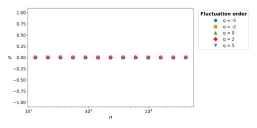
<figcaption class="paper-figure-caption"><b>Fig 1.</b> FIG. 1. Evaluation of ρSMFDCCA(n, q), using two indepen- dent fractional Gaussian noise time series generated by the exact Davies–Harte method with Hurst exponent H = 0.5 and 20,000 samples each. For all investigated scales n and fluctuation orders q ∈[−10, 10], the coefficient remains close to zero, indicating the absence of cross-correlations between the signals. The residual fluctuations around zero are consis- tent with finite-sample effects and demonstrate the numerical stability of the proposed coefficient for both positive and neg- ative values of q.</figcaption>
</figure>
<figure class="paper-figure-card">

<figcaption class="paper-figure-caption"><b>Fig 2.</b> FIG. 2. ρSMFDCCA(n, q) between the daily logarithmic returns of the Dow Jones Industrial Average and NASDAQ Composite Index from January 2, 1992 to May 8, 2026 (N = 8649). The coefficient is shown for fluctuation orders q ∈[−5, 5] as a func- tion of the window size n. Positive values of ρSMFDCCA(n, q) across all scales indicate persistent cross-correlations between the two U.S. equity markets. The increase of ρSMFDCCA(n, q) with q reveals strong synchronized co-movements for large- amplitude fluctuations than for small fluctuations, evidencing q-dependent asymmetry in the correlation structure.</figcaption>
</figure>
<figure class="paper-figure-card">

<figcaption class="paper-figure-caption"><b>Fig 3.</b> FIG. 3. ρSMFDCCA(n, q), for meteorological variables in São Paulo, Brazil. (a) Mean temperature versus mean relative hu- midity in São Paulo. (b) Maximum versus minimum temper- ature in São Paulo. The dependence on the fluctuation order q ∈[−5, 5] reveals heterogeneous cross-correlation structures across scales.</figcaption>
</figure>
</div>

<p><strong>Summary.</strong> This paper introduces a novel Signed Multifractal Detrended Cross-Correlation Coefficient ($
ho_{SMFDCCA}$) designed to overcome numerical instabilities associated with analyzing negative fluctuation orders in multifractal analysis. By conditioning the correlation on local fluctuation amplitudes, the observable remains bounded within [-1, 1] for all q. It successfully characterizes how cross-correlations change based on both temporal scale and the magnitude of fluctuations across diverse real-world datasets.</p>
<p><strong>Why it may be interesting.</strong> While not directly about quantum systems, the rigorous statistical framework developed for analyzing complex, non-stationary time series (like those found in quantum measurements or open system dynamics) provides advanced tools for characterizing multi-scale correlations that could be adapted to analyze noise spectra from quantum experiments.</p>
<details>
<summary>Detailed structure</summary>
<p><strong>Main problem.</strong> The standard Multifractal Detrended Cross-Correlation Coefficient fails for negative fluctuation orders due to numerical instabilities and unbounded values.</p>
<p><strong>Main result.</strong> The proposed Signed Multifractal Detrended Cross-Correlation Coefficient remains strictly bounded within [-1, 1] and successfully characterizes scale- and amplitude-dependent cross-correlations in diverse datasets.</p>
<p><strong>Method.</strong> It introduces an amplitude-conditioned observable by using locally normalized detrended correlations weighted by a fluctuation amplitude term to ensure mathematical stability for all orders q.</p>
<p><strong>Model / system.</strong> The method is applied to analyzing time series data from various physical and financial systems, including stock market indices (DJIA/NASDAQ) and meteorological records (temperature/humidity).</p>
<p><strong>Key observables.</strong> Signed Multifractal Detrended Cross-Correlation Coefficient ($
ho_{SMFDCCA}(n, q)$), local detrended correlation coefficient ($r_v(n)$), and local fluctuation amplitude ($A_v(n)$).</p>
<p><strong>Important parameters / regimes.</strong> Fluctuation order $q$ (ranging from negative to positive values); temporal scale $n$; regularization constant $\epsilon$.</p>
<p><strong>Assumptions / limitations.</strong> The method assumes that the cross-correlation structure can be robustly captured by an amplitude-conditioned weighted average, and a small regularization parameter ($\epsilon$) is necessary for numerical stability when $q < 0$.</p>
<p><strong>Figures summary.</strong> Figures illustrate $
ho_{SMFDCCA}(n, q)$ dependence on $q$ for meteorological variables (e.g., max vs min temperature), showing complex evolution across scales.</p>
<p><strong>Paper structure.</strong> The paper first identifies the limitations of existing correlation coefficients for negative orders; it then rigorously derives and proposes the $
ho_{SMFDCCA}$; validation is performed using fractional Gaussian noise, followed by empirical applications to financial and climate data.</p>
</details>
<details>
<summary>Abstract</summary>
<p>The multifractal detrended cross-correlation coefficient $ρ_q(n)$ is widely used to investigate scale-dependent interactions, but its application to negative fluctuation orders is affected by numerical instabilities, unbounded values, and interpretational difficulties. We propose a Signed Multifractal Detrended Cross-Correlation Coefficient, $ρ_{\mathrm{SMFDCCA}}(n,q)$, an amplitude-conditioned correlation observable for multifractal detrended analysis, based on locally normalized detrended correlations and regularized fluctuation amplitudes. The proposed coefficient preserves the sign of local interactions, remains strictly bounded within $[-1,1]$ for both positive and negative values of $q$, and eliminates the corrective procedures required by previous approaches. Validation using independent fractional Gaussian noise confirms the absence of spurious cross-correlations and the numerical stability of the method. Applications demonstrate that the proposed observable resolves how cross-correlations evolve jointly with temporal scale and fluctuation amplitude, revealing scale- and amplitude-dependent correlation structures, including stronger synchronization during large fluctuations in stock-market indices and heterogeneous coupling patterns in temperature records.</p>
</details>
<p><sub><a href="#top">↑ back to top</a></sub></p>

<p><a id="paper-2607.05779"></a></p>
<h3 id="separating-transient-leakage-exposure-from-endpoint-cancellation-in-fast-transmon-single-qubit-gates"><a href="http://arxiv.org/abs/2607.05779v1">Separating transient leakage exposure from endpoint cancellation in fast transmon single-qubit gates</a></h3>
<p><strong>Authors:</strong> Haoran Yang, Fudong Liu, Weilong Wang, Yangyang Fei, Zheng Shan<br>
<strong>Type:</strong> theory · <strong>Category:</strong> quantum information and computing · <strong>PDF:</strong> <a href="https://arxiv.org/pdf/2607.05779v1">https://arxiv.org/pdf/2607.05779v1</a><br>
<strong>Analysis basis:</strong> full PDF text, analyzed in chunks
<strong>Topic relevance:</strong> <code>QC/QI experiment</code> <strong>2/5</strong> · <code>Keldysh / 2PI / non-Gaussian methods</code> <strong>1/5</strong> · <code>correlated / nonlocal dissipation</code> <strong>1/5</strong> · <code>driven-dissipative phase transition</code> <strong>1/5</strong> · <code>methods for driven-dissipative</code> <strong>1/5</strong></p>
<div class="figure-strip-hint">↔ Scroll figures horizontally</div>
<div class="paper-figures-scroll">
<figure class="paper-figure-card">

<figcaption class="paper-figure-caption"><b>Fig 1.</b> FIG. 1. PESP construction: waveforms, spectra, and leakage trajectories. (a) Time-domain drive waveform Ω(t) for cosine DRAG (gray dotted) and the PSP (blue solid); real (solid) and imaginary (dashed) components. (b) Isolated endpoint-cancellation tones: single-tone ECP (blue) and second ECP tone (red); real and imaginary components as in (a). (c) Time-domain waveforms for cosine DRAG (black dotted), PESP-S (blue dashed), and PESP-C (red solid). (d) Leakage trajectories for initial |0⟩: per- level populations P|0⟩, P|1⟩, P|2⟩, P|3⟩for cosine DRAG (dotted) and PESP-C (solid). (e)–(g) Corresponding amplitude spectra |Ω(ω)| (dB scale); dashed vertical lines mark the computational frequency...</figcaption>
</figure>
<figure class="paper-figure-card">

<figcaption class="paper-figure-caption"><b>Fig 2.</b> FIG. 2. Four-level leakage-floor knee. (a) Path proxy ¯PA (left axis, blue) and bare four-level Pfinal (right axis, red) ver- sus wpath; basin occupancy shown at each point; the knee at wpath = 30 is marked. (b) Per-level decomposition into P |2⟩ final (|2⟩back-action, falling) and P |3⟩ final (|3⟩cascade, rising); the crossing governs the knee.</figcaption>
</figure>
<figure class="paper-figure-card">

<figcaption class="paper-figure-caption"><b>Fig 3.</b> Figure 2 summarizes the path-weight sweep for the PSP with a single-tone ECP. The proxy path is the three- level design quantity used by Stage 1, while the bare four- level endpoint floor is that of the same completed pulse before the second ECP tone. The four-level floor is non- monotonic: it falls from 2.6 × 10−6 at the endpoint-only point wpath = 0 to 7.0 × 10−7 near wpath = 30, then rises toward 8.6 × 10−7 as the path penalty is over-weighted. The competition has a simple origin in the first-order cascade amplitude c3(T) ≃ −i R T 0 Λ23(t) c2(t) ei2ηt dt (Sec. IV): as wpath grows, the reshaping of c2(t) that lowers its time average increases the net overlap feed- ing the |3⟩channel, so P...</figcaption>
</figure>
<figure class="paper-figure-card">

<figcaption class="paper-figure-caption"><b>Fig 4.</b> FIG. 3. Four-level Lindblad pure-dephasing validation and staged pulse construction. (a) Four-level pure-dephasing ex- cess leakage at Tϕ = 10 µs, normalized by the cosine-DRAG value. The endpoint-only and FAST-class baselines remain near the cosine value, whereas the path-shaping pulse reduces the excess by about 20%. Adding the single-tone or completed ECP leaves this reduction unchanged, confirming that the ECP acts on endpoint amplitudes rather than on the tran- sient path. (b) Schematic of the staged PESP construction. The main pulse controls the transient leakage path, the first ECP tone cancels the |2⟩endpoint amplitude, and the second ECP tone completes the four-level endpoint...</figcaption>
</figure>
<figure class="paper-figure-card">

<figcaption class="paper-figure-caption"><b>Fig 5.</b> FIG. 4. Five-level per-level decomposition of the completed PESP design (completed ECP) at wpath = 30, evaluated seed by seed. P |2⟩ final, P |3⟩ final, and P |4⟩ final on a log scale. The |4⟩compo- nent is three to four orders of magnitude below the dominant |3⟩channel and firmly negligible.</figcaption>
</figure>
</div>

<p><strong>Summary.</strong> This paper introduces the Path–Endpoint Separation Pulse (PESP) technique to improve fast single-qubit gates on transmon qubits by treating transient leakage exposure and final state leakage as separate control problems. By applying a path-shaping pulse and an endpoint-cancellation pulse sequentially, the method achieves superior suppression of both dephasing-induced errors and coherent residual errors compared to standard techniques.</p>
<p><strong>Why it may be interesting.</strong> This work provides a highly modular and interpretable framework for quantum control in superconducting qubits, moving beyond monolithic optimization to address distinct physical error channels (coherent vs. incoherent).</p>
<details>
<summary>Detailed structure</summary>
<p><strong>Main problem.</strong> Fast single-qubit gates on weakly anharmonic transmons are limited by leakage to noncomputational states, and standard mitigation techniques fail to address both transient exposure and endpoint errors independently.</p>
<p><strong>Main result.</strong> The proposed Path–Endpoint Separation Pulse (PESP) successfully decouples these two control objectives, significantly reducing dephasing-induced leakage ($\sim 20\%$) and the residual endpoint floor ($7	imes10^{-7}$ to $3	imes10^{-8}$) independently.</p>
<p><strong>Method.</strong> The authors developed a staged pulse sequence combining a Path-Shaping Pulse (PSP) to suppress time-integrated exposure and an Endpoint-Cancellation Pulse (ECP) to null the final drive spectrum amplitude.</p>
<p><strong>Model / system.</strong> The system is based on transmon qubits modeled as weakly anharmonic oscillators, analyzed using a rotating-frame Kerr-oscillator truncation Hamiltonian. Leakage analysis involves tracking populations in higher energy levels ($|2
angle, |3
angle$).</p>
<p><strong>Key observables.</strong> Endpoint Leakage ($|	ilde{\Lambda}(\eta)|^2$), Transient Leakage Exposure ($ar{P}_A$), Dephasing-induced Excess Leakage ($P_{\phi}^{	ext{excess}}$), and Gate Fidelity ($F_{	ext{comp}}$).</p>
<p><strong>Important parameters / regimes.</strong> Gate time (e.g., $10 	ext{ ns}$ for $R_X(\pi/2)$), anharmonicity ($\eta$), dephasing rate ($\gamma_\phi$), and the relative weights assigned to path vs. endpoint control.</p>
<p><strong>Assumptions / limitations.</strong> The primary assumption is that endpoint leakage and transient exposure are mathematically distinct control objectives, allowing for modular optimization; hardware limitations like ZOH sampling and LP filtering are also analyzed as constraints.</p>
<p><strong>Figures summary.</strong> Figures illustrate pulse waveforms, spectral components, and leakage trajectories comparing PESP to standard DRAG. Tables quantify path reduction across parameter grids and detail the sensitivity of the final error floor to various hardware imperfections (amplitude mismatch, sampling rate).</p>
<p><strong>Paper structure.</strong> The paper establishes the limitations of existing methods by distinguishing between endpoint and transient leakage sources. It then introduces the PESP protocol, detailing the PSP for path shaping and the ECP for endpoint cancellation. Finally, it validates the method through extensive numerical simulations testing robustness against noise, sampling artifacts, and parameter variations.</p>
</details>
<details>
<summary>Abstract</summary>
<p>Fast single-qubit gates on weakly anharmonic transmons are limited by leakage to noncomputational states, and standard mitigations such as DRAG (derivative removal by adiabatic gate) act on the leakage amplitude at the end of the gate. We show that this endpoint amplitude and the transient leakage exposure accumulated during the gate are two distinct control objectives that can be assigned to separate modules. The endpoint is a single sample of the drive spectrum, $|\tildeΛ(η)|^2$; the exposure is a band integral about $η$ and governs leakage under dephasing, and the spectral-null condition $\tildeΛ(η)=0$ constrains only the former. We realize this split in a path--endpoint separation pulse (PESP): a path-shaping pulse suppresses the exposure, and a two-tone endpoint-cancellation pulse cancels the residual amplitude. For a $10$ ns $R_{X}(π/2)$ gate at $η/2π=0.2$ GHz, in numerical simulations the path-shaping pulse reduces the dephasing exposure by ${\sim}21\%$ relative to cosine DRAG and the independently simulated Lindblad excess leakage by ${\sim}20\%$, consistent with $P_{\mathrm{excess}}^φ\simeqγ_φT\bar{P}_{A}^{\mathrm{deph}}$, whereas matched-budget endpoint-only and spectral-null controls leave it essentially unchanged. The residual endpoint floor splits exactly into a $|2\rangle$ back-action and a $|3\rangle$ cascade, which the two tones cancel one-to-one, driving the floor at the path-exposure knee from ${\sim}7\times10^{-7}$ to ${\sim}3\times10^{-8}$ without perturbing the path. By separating transient exposure from endpoint leakage, PESP turns leakage suppression in fast weakly anharmonic gates into a modular, interpretable control problem: dephasing-induced leakage and the coherent residual error are reduced by separate, individually verifiable modules.</p>
</details>
<p><sub><a href="#top">↑ back to top</a></sub></p>

<p><a id="paper-2607.06410"></a></p>
<h3 id="geometric-obstructions-to-quadratic-time-scaling-in-multiparameter-quantum-estimation"><a href="http://arxiv.org/abs/2607.06410v1">Geometric obstructions to quadratic time scaling in multiparameter quantum estimation</a></h3>
<p><strong>Authors:</strong> Eoin O'Connor, Jiayu He, Matteo G. A. Paris, Marco G. Genoni<br>
<strong>Type:</strong> theory · <strong>Category:</strong> other · <strong>PDF:</strong> <a href="https://arxiv.org/pdf/2607.06410v1">https://arxiv.org/pdf/2607.06410v1</a><br>
<strong>Analysis basis:</strong> full PDF text, analyzed in chunks
<strong>Topic relevance:</strong> <code>entanglement &amp; information structure</code> <strong>2/5</strong> · <code>analog quantum simulation</code> <strong>1/5</strong> · <code>quantum measurements</code> <strong>1/5</strong></p>
<div class="figure-strip-hint">↔ Scroll figures horizontally</div>
<div class="paper-figures-scroll">
<figure class="paper-figure-card">

<figcaption class="paper-figure-caption"><b>Fig 1.</b> FIG. 1. Trace of the inverse Gram matrix Tr h G−1i of the traceless diagonal generators ˆ Dµ for the LMG model as a function of ω/λ with N = 128.</figcaption>
</figure>
</div>

<p><strong>Summary.</strong> This paper establishes a universal geometric obstruction proving that simultaneous quadratic scaling in multiparameter quantum estimation fails if the commuting components of the Hamiltonian derivatives are linearly dependent. The failure manifests as a bottleneck limiting precision to $O(t^0)$ rather than the desired $O(t^{-2})$. This diagnostic tool is crucial for designing high-precision quantum sensors.</p>
<p><strong>Why it may be interesting.</strong> It provides a rigorous, computable diagnostic tool (the Gram matrix) to predict fundamental limitations in quantum sensing protocols before extensive numerical simulation is required.</p>
<details>
<summary>Detailed structure</summary>
<p><strong>Main problem.</strong> The paper investigates the fundamental geometric conditions under which multiparameter quantum estimation can achieve the optimal quadratic scaling ($t^{-2}$) in precision.</p>
<p><strong>Main result.</strong> A universal obstruction exists: linear dependence among the commuting components of the Hamiltonian derivatives limits the achievable precision to $O(t^0)$ scaling, regardless of ancilla assistance.</p>
<p><strong>Method.</strong> The analysis uses geometric tools like the Gram matrix and asymptotic analysis of the Quantum Fisher Information Matrix (QFIM) derived from unitary evolution.</p>
<p><strong>Model / system.</strong> The framework is general for time-independent Hamiltonians $\hat{H}(\mathbf{g})$, applicable to discrete systems (e.g., spin magnets) and continuous variable setups (e.g., quantum harmonic oscillator).</p>
<p><strong>Key observables.</strong> Quantum Fisher Information Matrix (QFIM), SLD bound, Gram matrix of diagonal generators ($G_{\mu
u}$), and the minimum eigenvalue ($\lambda_{\min}$) of the QFIM.</p>
<p><strong>Important parameters / regimes.</strong> Time $t$, number of parameters $\mu$, and the structure of the Hamiltonian derivatives decomposed into commuting ($\hat{D}_\mu$) and non-commuting ($\hat{O}_\mu$) parts.</p>
<p><strong>Assumptions / limitations.</strong> The analysis relies on decomposing parameter dependence into commuting/non-commuting parts, and in some examples (like the QHO), assumes Gaussian states for covariance matrix calculations.</p>
<p><strong>Figures summary.</strong> Not specified by notes; the structure revolves around deriving diagnostic criteria based on linear algebra applied to generator components.</p>
<p><strong>Paper structure.</strong> The paper establishes the general framework using Hamiltonian decomposition, derives the geometric obstruction condition via the Gram matrix, analyzes specific physical examples (spin systems, QHO), and discusses potential workarounds like nuisance parameter treatment or adaptive control.</p>
</details>
<details>
<summary>Abstract</summary>
<p>Unitary encoding of a single parameter provides quadratic enhancement in precision, with the quantum Fisher information scaling quadratically with the encoding time. However, when estimating multiple parameters simultaneously, this fundamental scaling is not guaranteed. Here, we establish a universal geometric obstruction that dictates when multiparameter quantum metrology fails to achieve simultaneous $t^{-2}$ scaling. By decomposing the Hamiltonian derivatives into components that commute and do not commute with the system Hamiltonian, we prove that linear dependence among the commuting components inevitably generates a slow parameter direction whose Fisher information remains bounded as O$(t^0)$, limiting the overall estimation precision. We demonstrate this mechanism in both discrete- and continuous-variable setups, including collective spin magnetometry and a generalized quantum harmonic oscillator, and contrast it with the Lipkin--Meshkov--Glick model where $t^{-2}$ decay is preserved. Remarkably, while the slow direction fundamentally limits the achievable precision, the measurement incompatibility between fast and slow directions decays as $1/t$, rendering the symmetric logarithmic derivative bound asymptotically saturable. Our framework provides a readily computable diagnostic, given by the Gram matrix of the diagonal generators, for identifying such obstructions in arbitrary multiparameter estimation problems. We further show that the bottleneck can be circumvented by relegating slow directions to nuisance parameters or by employing adaptive quantum control.</p>
</details>
<p><sub><a href="#top">↑ back to top</a></sub></p>

<p><a id="paper-2607.05805"></a></p>
<h3 id="onnes-a-physics-grounded-multi-agent-llm-simulator-for-cryogenic-fault-diagnosis-in-quantum-computing-infrastructure"><a href="http://arxiv.org/abs/2607.05805v1">Onnes: A Physics-Grounded Multi-Agent LLM Simulator for Cryogenic Fault Diagnosis in Quantum Computing Infrastructure</a></h3>
<p><strong>Authors:</strong> Praneeth Narisetty, Uday Kumar Reddy Kattamanchi, Shiva Nagendra Babu Kore<br>
<strong>Type:</strong> both · <strong>Category:</strong> other · <strong>PDF:</strong> <a href="https://arxiv.org/pdf/2607.05805v1">https://arxiv.org/pdf/2607.05805v1</a><br>
<strong>Analysis basis:</strong> full PDF text, analyzed in chunks
<strong>Topic relevance:</strong> <code>QC/QI experiment</code> <strong>2/5</strong> · <code>driven-dissipative phase transition</code> <strong>1/5</strong> · <code>methods for driven-dissipative</code> <strong>1/5</strong></p>
<div class="figure-strip-hint">↔ Scroll figures horizontally</div>
<div class="paper-figures-scroll">
<figure class="paper-figure-card">

<figcaption class="paper-figure-caption"><b>Fig 1.</b> Figure 1: End-to-end system. The twin (a) renders a telemetry window from one seed; a single summarize_window feeds the identical window to both the 5-role agent panel (b) and the supervised ML path (c). Because both methods see the same seed-addressed scenarios, the head-to-head uses the exact paired McNemar test (d). The same panel runs as a continuous monitor (e) over a rolling window at a fixed poll cadence. Dashed violet: the optional few-shot/self-consistency levers (Section 7).</figcaption>
</figure>
<figure class="paper-figure-card">

<figcaption class="paper-figure-caption"><b>Fig 2.</b> Figure 2: Data flow of the twin. Physics sets the mean trajec- tory; a fingerprint learned from real BlueFors logs supplies fluctuations and cross-stage correlation; faults are heat-load perturbations; sensor imperfections are layered last.</figcaption>
</figure>
<figure class="paper-figure-card">

<figcaption class="paper-figure-caption"><b>Fig 3.</b> Figure 3: Quench physics, corrected. Steady-load model: +6.9% ramp (grey). Real 1</figcaption>
</figure>
<figure class="paper-figure-card">

<figcaption class="paper-figure-caption"><b>Fig 4.</b> Figure 5: The five-role pipeline. Solid: the fixed zero-shot path. Dashed (violet): the two optional, evidence-backed levers attached to the Diagnostician (Section 7). Defaults pre- serve exact zero-shot behavior.</figcaption>
</figure>
<figure class="paper-figure-card">

<figcaption class="paper-figure-caption"><b>Fig 5.</b> Figure 4: Three thermal faults overlap on MXC temperature (left, ambiguous) but separate on the flow channel (right, dis- criminative). A static temperature snapshot cannot classify them; a supervised model can still reach macro-F1 0.983 from temperature trajectory features alone (Table 1), so the over- lap is a difficulty for snapshot- and zero-shot reasoning, not an information-theoretic barrier. Flow and pressure are the physically direct, noise-robust discriminators, and are what the engineered baseline (Section 5) exploits.</figcaption>
</figure>
</div>

<p><strong>Summary.</strong> This paper introduces 'Onnes,' a digital-twin simulator of dilution refrigerators used in quantum computing. It compares a multi-agent LLM diagnostic system against supervised ML classifiers for identifying complex cryogenic faults. The key finding is that by incorporating physics knowledge and few-shot examples, the LLM agent can achieve near state-of-the-art classification accuracy without explicit retraining.</p>
<p><strong>Why it may be interesting.</strong> While focused on AI/ML for infrastructure, the reliance on a detailed physics model (digital twin) to constrain and validate an advanced AI agent is highly relevant for building trustworthy quantum hardware control systems.</p>
<details>
<summary>Detailed structure</summary>
<p><strong>Main problem.</strong> The core problem is improving cryogenic fault diagnosis for superconducting quantum computers, moving beyond simple threshold alarms to specific diagnoses.</p>
<p><strong>Main result.</strong> A physics-grounded LLM agent, enhanced with few-shot demonstrations, achieved classification accuracy matching supervised ML classifiers (0.990 vs 0.985) on challenging, confusable faults.</p>
<p><strong>Method.</strong> The study uses a head-to-head comparison between a multi-agent LLM simulator and a supervised ML classifier operating on simulated cryogenic telemetry data.</p>
<p><strong>Model / system.</strong> The system is 'Onnes,' a physics-grounded digital twin of a dilution refrigerator, simulating temperature, flow, and pressure across multiple stages using real noise fingerprints from BlueFors logs.</p>
<p><strong>Key observables.</strong> Fault classification accuracy, false-alarm rate (FAR), detection capability, and structured diagnostic output (e.g., class / severity / action).</p>
<p><strong>Important parameters / regimes.</strong> Operating temperatures down to mK; 1000-turn evaluation length; six distinct physics-grounded fault classes.</p>
<p><strong>Assumptions / limitations.</strong> The LLM agent's performance gain is attributed almost entirely to the curated contrastive few-shot demonstrations, not inherent multi-agent debate mechanisms.</p>
<p><strong>Figures summary.</strong> Figures illustrate the end-to-end system architecture comparing the LLM panel vs. ML path, and show how different faults overlap on temperature but separate on flow/pressure.</p>
<p><strong>Paper structure.</strong> The paper introduces the physical problem (cryo fault diagnosis), details the Onnes digital twin simulator, compares zero-shot LLM performance against supervised ML benchmarks, and concludes with sim-to-real validation results.</p>
</details>
<details>
<summary>Abstract</summary>
<p>Dilution refrigerators are the enabling infrastructure of superconducting quantum computers, yet their fault diagnosis is still dominated by threshold alarms that report that something is wrong, not what. We present Onnes, a physics-grounded digital-twin simulator of a dilution refrigerator (a forward physics model with a learned real-fridge noise fingerprint) that drives a live multi-agent LLM operations layer, and use it for a controlled head-to-head between a zero-shot LLM agent panel and a supervised ML classifier on cryogenic fault diagnosis. The twin couples a real dilution-cooling floor, a noise-and-correlation fingerprint learned from real BlueFors logs, and six physics-grounded fault classes, three engineered to overlap on temperature but separate on flow and pressure. Across a 1000-turn evaluation the zero-shot panel shows no significant difference from the classifier on detection but trails on classification, its errors concentrating on the confusable faults. Curated contrastive few-shot demonstrations and self-consistency voting then raise classification accuracy from 0.685 to 0.990, matching the supervised classifier (0.985) with no parameter updates and six labeled demonstrations; an ablation attributes the gain almost entirely to the demonstrations. Run as a continuous monitor across a nine-run fault-by-seed sweep, the agent catches every developing fault within one poll interval, and a confidence gate suppresses pre-onset false alarms whose rate is backend-dependent. As a first sim-to-real check, a detector trained purely on real BlueFors telemetry posts a real-hardware false-alarm rate of 6.4% and 100% recall on physics faults injected onto real held-out windows. All numbers are drawn verbatim from released run logs.</p>
</details>
<p><sub><a href="#top">↑ back to top</a></sub></p>

<p><a id="paper-2607.05650"></a></p>
<h3 id="verifiable-blind-quantum-computing-comparative-analysis-and-design-considerations-for-client-architectures"><a href="http://arxiv.org/abs/2607.05650v1">Verifiable blind quantum computing: Comparative analysis and design considerations for client architectures</a></h3>
<p><strong>Authors:</strong> Janice van Dam, Jeroen Grimbergen, Stephanie D. C. Wehner<br>
<strong>Type:</strong> theory · <strong>Category:</strong> quantum information and computing · <strong>PDF:</strong> <a href="https://arxiv.org/pdf/2607.05650v1">https://arxiv.org/pdf/2607.05650v1</a><br>
<strong>Analysis basis:</strong> full PDF text, analyzed in chunks
<strong>Topic relevance:</strong> <code>QC/QI experiment</code> <strong>2/5</strong> · <code>quantum measurements</code> <strong>1/5</strong> · <code>quantum optics experiment</code> <strong>1/5</strong></p>
<div class="figure-strip-hint">↔ Scroll figures horizontally</div>
<div class="paper-figures-scroll">
<figure class="paper-figure-card">

<figcaption class="paper-figure-caption"><b>Fig 1.</b> FIG. 1: Overview of client architecture taxonomy. Three categories based on client capabilities: Emission-based (green), measurement-based (blue) and rotation-based (orange). The clients within these categories can belong to sub categories, such as prepare-and-send and receive-and-measure, indicating the role they play in the VBQC protocol. Additionally, the rotation-based clients are separated by how often a signal needs to travel between the client and the server (single-pass vs multi-pass), and by the hardware that implements them (‘fixed-gate’ vs non-fixed). Triangles indicate alternative photon-matter interfaces available for the corresponding client, as shown in the legend in the...</figcaption>
</figure>
<figure class="paper-figure-card">

<figcaption class="paper-figure-caption"><b>Fig 2.</b> FIG. 2: The time per attempt (tattempt) depends on the location of the heralding. When heralding is done at the midpoint between the client and the server (a), less communication is required compared to the situation in (b), where heralding is done at an end-point.</figcaption>
</figure>
<figure class="paper-figure-card">

<figcaption class="paper-figure-caption"><b>Fig 3.</b> FIG. 3: Upper and lower bounds to expected number of attempts for generating brickwork graph state with cutoffs. The upper and lower bounds on the expected number of attempts to generate a brickwork graph state with qubitwise cutoffs are evaluated numerically for a brickwork graph of dimensions nr = 2 and nc = 10 with cutoff c = 1000 attempts in the regime p ∈[10−3, 10−1]. The cutoff is shown as a horizontal dashed line. For p ≳10−2 the expected number of attempts is less than or on the order of the cutoff. In this regime the upper- and lower bound are tight. For p ≲10−2 the upper bound blows up. The lower bound initially stays around the cutoff when decreasing p below 10−2, but then blows...</figcaption>
</figure>
<figure class="paper-figure-card">

<figcaption class="paper-figure-caption"><b>Fig 4.</b> FIG. 4: Expected number of attempts for generating brickwork graph state with cutoffs. Legend of (a) applies to (b) and (c) as well. (a) We show the upper and lowerbounds to the expected number of attempts to generate the brickwork graph state with qubitwise cutoffs nr = 2 and nc = 10 with cutoff c = 1000 in the regime p ∈[10−3, 10−1], as in fig. 3. The cutoff c is shown as a horizontal dashed line. We also include the expected number of attempts for columnwise cutoffs with cutoff c and c/2 explicitly. It can be seen that as p decreases the upperbound becomes similar to a columnwise cutoff of c/2 and the lowerbound becomes similar to a columnwise cutoff of c. In (b) the cutoff is increased...</figcaption>
</figure>
</div>

<p><strong>Summary.</strong> This work conducts a comprehensive comparison of client device architectures designed for Verifiable Blind Quantum Computing (VBQC). By analyzing emission-based, measurement-based, and rotation-based approaches using photonic qubits against a matter-qubit server, it establishes a framework to guide the selection of the most suitable architecture based on specific security or performance requirements.</p>
<p><strong>Why it may be interesting.</strong> It directly compares hardware implementations for quantum computation protocols, offering guidance on selecting optimal architectures based on practical constraints like error rates and required fidelity.</p>
<details>
<summary>Detailed structure</summary>
<p><strong>Main problem.</strong> The paper addresses Verifiable Blind Quantum Computing (VBQC), which allows a client to delegate quantum computations while ensuring privacy and verifying the server's correct execution.</p>
<p><strong>Main result.</strong> It provides a comparative analysis of three main client architectures—emission-based, measurement-based, and rotation-based—for VBQC with a matter-qubit server.</p>
<p><strong>Method.</strong> The authors compare these architectures across security guarantees, derived rate equations, error behavior, and hardware cost using information-theoretic security models.</p>
<p><strong>Model / system.</strong> The analysis is restricted to single-server, single-client protocols based on measurement-based quantum computation (MBQC), utilizing photonic qubits for communication with a matter-qubit server.</p>
<p><strong>Key observables.</strong> Security guarantees, protocol execution rates, error behavior, and hardware cost/design considerations.</p>
<p><strong>Important parameters / regimes.</strong> Single-server/single-client protocols; information-theoretic security requirements.</p>
<p><strong>Assumptions / limitations.</strong> The analysis assumes the use of matter qubits for the server and photonic qubits for communication, focusing on single-user scenarios.</p>
<p><strong>Figures summary.</strong> Figure 1 depicts a taxonomy classifying client architectures into emission-based, measurement-based, and rotation-based categories.</p>
<p><strong>Paper structure.</strong> The paper systematically classifies client capabilities (Emission, Measurement, Rotation) by detailing the physical mechanisms for state transfer within each category, followed by a comparative evaluation across multiple performance dimensions.</p>
</details>
<details>
<summary>Abstract</summary>
<p>Blind quantum computing (BQC) allows a client to delegate quantum computations to a remote server without revealing the input, computation, or output. In addition to being blind, the client can sometimes also verify that the server has performed their instructions correctly, a property known as verifiability. A key part of realizing such verifiable BQC (VBQC) is choosing the design of the client device: many architectures have been proposed, each with different hardware requirements, security properties, and performance characteristics, making it difficult to identify which is most suitable for a given implementation. In this work, we present a comparative analysis of client architectures for VBQC with a matter-qubit server. We restrict our analysis to single-server, single-client protocols with information-theoretic security based on measurement-based quantum computation. We identify three main categories of client: emission-based, measurement-based, and rotation-based, each with multiple variants depending on how the client interacts with the server. We evaluate each across different dimensions: we compare guarantees of existing corresponding security proofs, we derive equations for the rate at which each client can execute a protocol, we provide an overview of each architecture's error behaviour, and discuss hardware cost and design considerations. Client architectures implementing measurement-based remote state preparation and reflection-based teleportation emerge as strong default candidates, but as the right choice remains context-dependent, we provide a framework for navigating considerations to guide the selection of the most suitable architecture for a given setting.</p>
</details>
<p><sub><a href="#top">↑ back to top</a></sub></p>

<p><a id="paper-2607.06336"></a></p>
<h3 id="enumeration-of-laplacian-integral-and-101-diagonalizable-graphs"><a href="http://arxiv.org/abs/2607.06336v1">Enumeration of Laplacian integral and {-1,0,1}-diagonalizable graphs</a></h3>
<p><strong>Authors:</strong> Nathaniel Johnston, Sarah Plosker, Luis M. B. Varona<br>
<strong>Type:</strong> theory · <strong>Category:</strong> other · <strong>PDF:</strong> <a href="https://arxiv.org/pdf/2607.06336v1">https://arxiv.org/pdf/2607.06336v1</a><br>
<strong>Analysis basis:</strong> full PDF text, analyzed in chunks
<strong>Topic relevance:</strong> <code>analog quantum simulation</code> <strong>2/5</strong> · <code>non-equilibrium dynamics</code> <strong>1/5</strong></p>
<div class="figure-strip-hint">↔ Scroll figures horizontally</div>
<div class="paper-figures-scroll">
<figure class="paper-figure-card">

<figcaption class="paper-figure-caption"><b>Fig 1.</b> Figure 1: A graph with spectrum St8,9u6 9, thus providing a counterexample to [HT23, Conjecture 5.4].</figcaption>
</figure>
</div>

<p><strong>Summary.</strong> This paper provides a deep structural characterization and extensive enumeration of graphs whose Laplacian matrices have integer eigenvalues or possess specific $\{-1, 0, 1\}$-valued eigenvector bases. By linking these graph properties to underlying algebraic structures, the authors advance both pure graph theory and provide tools relevant for analyzing quantum walks on networks.</p>
<p><strong>Why it may be interesting.</strong> While the core subject is graph theory, the explicit mention of Laplacian matrices and their connection to Continuous-Time Quantum Walks (CTQWs) makes it highly relevant for theoretical physicists studying open quantum systems dynamics on structured lattices or graphs.</p>
<details>
<summary>Detailed structure</summary>
<p><strong>Main problem.</strong> The paper focuses on characterizing and enumerating two specific families of graphs: Laplacian integral graphs (where Laplacian eigenvalues are integers) and $\{-1, 0, 1\}$-diagonalizable graphs.</p>
<p><strong>Main result.</strong> They developed structure theorems for these graphs of prime order and provided extensive computational enumeration results up to moderate orders. They also established an exponential lower bound on the number of connected $\{-1, 0, 1\}$-diagonalizable graphs.</p>
<p><strong>Method.</strong> The methods combine algebraic graph theory with advanced linear algebra techniques, including developing structure theorems based on properties like 'balanced vectors' and using computational tools (like QR factorization) to verify eigenvector bases.</p>
<p><strong>Model / system.</strong> The mathematical model is the graph $G$, analyzed via its Laplacian matrix $L$. The concepts are related to Continuous-Time Quantum Walks (CTQWs), suggesting a connection to quantum dynamics on graphs.</p>
<p><strong>Key observables.</strong> Integer eigenvalues of the Laplacian matrix, and the existence of an eigenvector basis whose entries belong only to $\{-1, 0, 1\}$.</p>
<p><strong>Important parameters / regimes.</strong> The order $n$ of the graph (especially prime orders), and the structure of the associated eigenspaces.</p>
<p><strong>Assumptions / limitations.</strong> For some results, the analysis assumes considering sorted, non-increasing entries for balanced vectors. Computationally, the methods become infeasible for graphs exceeding $n \approx 19$.</p>
<p><strong>Figures summary.</strong> The notes mention Figure 1 showing a graph realizing a specific spectrum that serves as a counterexample to an earlier conjecture.</p>
<p><strong>Paper structure.</strong> The paper develops structure theorems (especially for prime order) and then applies novel computational techniques, including DFS searches over balanced vectors and rank checks on eigenvector basis matrices, to enumerate graphs in the two specified classes.</p>
</details>
<details>
<summary>Abstract</summary>
<p>A graph with Laplacian matrix $L$ is called Laplacian integral if the eigenvalues of $L$ are all integers, and it is called $\{-1,0,1\}$-diagonalizable if $L$ has a full set of eigenvectors with entries from $\{-1,0,1\}$. We herein develop a structure theorem for both Laplacian integral graphs and $\{-1,0,1\}$-diagonalizable graphs of prime order, and combine it with some novel computational techniques to characterize all such graphs for orders larger than was previously possible. For example, we enumerate all Laplacian integral and $\{-1,0,1\}$-diagonalizable graphs of order $13$ or less, all $\{-1,0,1\}$-diagonalizable graphs of prime order $23$ or less, all regular integral graphs of order $15$ or less, and all regular $\{-1,0,1\}$-diagonalizable graphs of prime order $53$ or less. As an immediate byproduct of our work, we show that the $S_{n,n}$ conjecture for Laplacian integral graphs is true when $n = 12$, thus making $n = 16$ the smallest open case; additionally, we disprove two related conjectures regarding Laplacian spectra. We also establish an exponential lower bound on the number of connected $\{-1,0,1\}$-diagonalizable graphs of order $n$, thus beating the previously best-known (subexponential) lower bound. Finally, we show that every bipartite $\{-1,0,1\}$-diagonalizable graph is regular (a fact that fails to generalize to Laplacian integral graphs).</p>
</details>
<p><sub><a href="#top">↑ back to top</a></sub></p>

<p><a id="paper-2607.05724"></a></p>
<h3 id="low-overhead-error-corrected-qcnns-using-bivariate-bicycle-codes"><a href="http://arxiv.org/abs/2607.05724v1">Low-Overhead Error-Corrected QCNNs Using Bivariate Bicycle Codes</a></h3>
<p><strong>Authors:</strong> Alejandro Rosales, Animesh Yadav<br>
<strong>Type:</strong> theory · <strong>Category:</strong> quantum information and computing · <strong>PDF:</strong> <a href="https://arxiv.org/pdf/2607.05724v1">https://arxiv.org/pdf/2607.05724v1</a><br>
<strong>Analysis basis:</strong> full PDF text, analyzed in chunks
<strong>Topic relevance:</strong> <code>QC/QI experiment</code> <strong>2/5</strong> · <code>methods for driven-dissipative</code> <strong>1/5</strong></p>
<div class="figure-strip-hint">↔ Scroll figures horizontally</div>
<div class="paper-figures-scroll">
<figure class="paper-figure-card">

<figcaption class="paper-figure-caption"><b>Fig 1.</b> Fig. 1: (a) Points show a 64 × 64 test set of ground states over h1 and h2 for a Hamiltonian with J = 1. Phase- boundary points (blue and red diamonds) come from infinite- size density-matrix renormalization group (DMRG). Colors indicate the circuit’s expectation values found via evolutionary search for N = 4 spins using initial, untrained weights. (An artifact can be seen, possibly because of the low qubit spin state.) (b) Uses the same test set and with trained weights after 100 iterations.</figcaption>
</figure>
<figure class="paper-figure-card">

<figcaption class="paper-figure-caption"><b>Fig 2.</b> Fig. 2: QEC-QCNN circuit.</figcaption>
</figure>
<figure class="paper-figure-card">

<figcaption class="paper-figure-caption"><b>Fig 3.</b> Fig. 3: Statevector training loss vs iteration for 4-qubit QCNN and 11-qubit transversal QCNN.</figcaption>
</figure>
<figure class="paper-figure-card">

<figcaption class="paper-figure-caption"><b>Fig 4.</b> Fig. 4: Training loss versus iteration (a) the 4-qubit QCNN and (b) the 11-qubit transversal QCNN.</figcaption>
</figure>
<figure class="paper-figure-card">

<figcaption class="paper-figure-caption"><b>Fig 5.</b> Fig. 6: 4-qubit QCNN prediction of an antiferromagnetic and paramagnetism phase with the trained model. The QCNN (blue) and the QEC-QCNN (orange) are shown.</figcaption>
</figure>
</div>

<p><strong>Summary.</strong> The paper tackles the challenge of making Quantum Convolutional Neural Networks practical by integrating them with Bivariate Bicycle (BB) quantum error correction. By implementing a transversal encoding scheme, the authors demonstrate that their low-overhead QEC technique significantly enhances the network's ability to train and maintain performance under realistic hardware noise compared to unprotected methods.</p>
<p><strong>Why it may be interesting.</strong> This work directly addresses the critical gap between theoretical quantum computation models (like QCNNs) and near-term hardware limitations (NISQ noise). The focus on low-overhead, structured codes like BB codes is highly relevant for experimentalists building fault-tolerant quantum processors.</p>
<details>
<summary>Detailed structure</summary>
<p><strong>Main problem.</strong> The primary challenge is enabling practical Quantum Convolutional Neural Networks (QCNNs) by mitigating high noise levels inherent in current quantum hardware while avoiding the prohibitive qubit overhead of existing error correction codes.</p>
<p><strong>Main result.</strong> The authors successfully demonstrate that integrating a low-overhead, distance-4 Bivariate Bicycle (BB) code via a transversal architecture significantly improves QCNN trainability and convergence compared to unprotected or standard implementations under realistic noise conditions.</p>
<p><strong>Method.</strong> They propose embedding the QCNN operations within the protective subspace defined by the BB quantum error-correcting code. The training process involves simulating noisy evolution using transversal gates that map logical operations onto physical qubits, allowing for direct comparison of performance metrics like loss convergence.</p>
<p><strong>Model / system.</strong> The system models a QCNN applied to tasks like Quantum Phase Recognition (QPR) in 1D spin systems. Error correction is achieved using the Bivariate Bicycle (BB) code, which offers a favorable balance between high error threshold and low qubit overhead compared to surface codes.</p>
<p><strong>Key observables.</strong> Training loss convergence, learning rate, error rates ($p$), and classification accuracy for quantum phases (e.g., SPT phase).</p>
<p><strong>Important parameters / regimes.</strong> Code distance $d=4$, noise probability $p \in \{0.0001, 0.001\}$, and the structure of the BB code defined over $\mathbb{F}_2[x, y]/(x^\ell-1, y^m-1)$.</p>
<p><strong>Assumptions / limitations.</strong> The analysis assumes that transversal operations can successfully encode QCNN logic while respecting the locality constraints of the underlying quantum error-correcting code structure.</p>
<p><strong>Figures summary.</strong> Figures compare prediction values (violin plots) between standard and transversal QCNNs across varying Pauli noise levels, showing superior resilience for the transversal approach. Other figures illustrate phase boundaries or circuit expectation values.</p>
<p><strong>Paper structure.</strong> The paper first establishes the need to improve QCNNs against hardware noise. It then introduces the BB code as a solution, detailing the integration via transversal operations. The core of the work involves simulating and comparing standard vs. transversal QCNN performance under increasing levels of Pauli noise ($p$), culminating in validation of the low-overhead error correction scheme.</p>
</details>
<details>
<summary>Abstract</summary>
<p>Quantum convolutional neural networks (QCNNs) combine the power of quantum computing and classical CNN for computational speedup in classification tasks. However, noise levels on state-of-the-art quantum devices remain too high for practical QCNN execution. In addition, despite the reliable surface code providing a method for error rates below a threshold value, they have a prohibitively large qubit cost. Recently introduced bivariate bicycle (BB) codes are of particular interest for their high error threshold, constant encoding rate, and linear code distance. Through simulation with realistic hardware noise sources, we demonstrate that a 4-qubit unprotected QCNN fails to converge and exhibits a worse learning rate compared to numerical simulations. Addressing both limitations, we propose a distance-4 BB quantum error-correction (QEC) technique for QCNNs. In doing so, we validate that our low-overhead QEC technique for QCNNS represents a step toward practical QCNNs.</p>
</details>
<p><sub><a href="#top">↑ back to top</a></sub></p>
<hr>
<p>
<a href="index.html">← Index</a>
 · <a href="papers_03.html">← Previous</a> · <a href="papers_05.html">Next →</a>
</p>
<hr>

</body>
</html>
